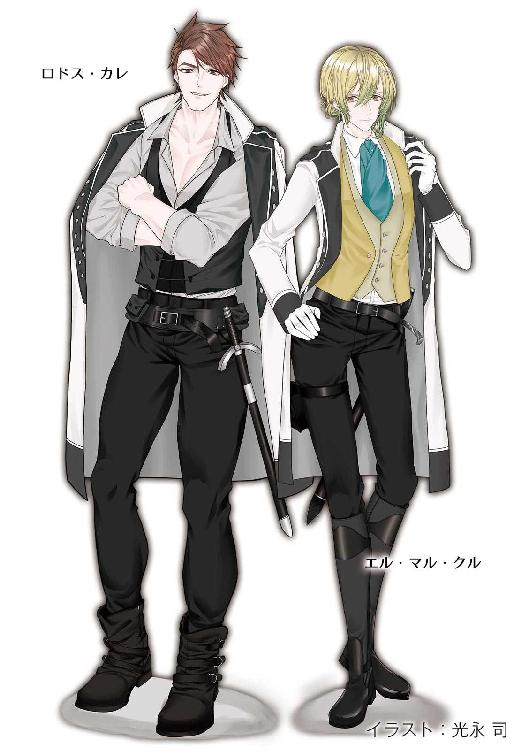

| 月戈伝 1巻 月KA伝シリーズ | |
| 御木 宏美 | |
| クリーク・アンド・リバー社 (2018) | |

月戈伝 １巻
～月KA伝シリーズ３～
御木 宏美
本作品の全部または一部を無断で複製、転載、配信、送信したり、ホームページ上に転載したりすることを禁止します。また、本作品の内容を無断で改変、改ざん等を行うことも禁止します。
本作品購入時にご承諾いただいた規約により、有償・無償にかかわらず本作品を第三者に譲渡することはできません。
本作品を示すサムネイルなどのイメージ画像は、再ダウンロード時に予告なく変更される場合があります。
本作品は縦書きでレイアウトされています。
また、ご覧になるリーディングシステムにより、表示の差が認められることがあります。
月戈伝
プロローグ
石の廊下に慌しい靴音が響いていた。
毛織の上着の裾をはためかせながら一目散に駆けて来る若者がいる。
大元帥の執務室前に立つ警護の近衛兵たちは、やって来るその質素な身なりの人物が神王ヒンディーの異母弟アスラン殿下と見てとり、素早く背後の扉を開いた。
アスランは勢いを落とさず大元帥の執務室に駆け込んだ。
「兄上！」
正面の執務机についていたサーマルが視線を寄越した。もう一人、アスランに背を向ける形で執務机をはさんで立っていたルガも肩越しに振り返る。
「あれはなんなのです!?」
怒鳴ったアスランはサーマルの答えを待たず、背後のガラス窓に向かった。
バイロン神王国を統べる神王の居城は城壁が二重に張り巡らされている。大元帥の執務室は城壁と城壁の間の空堀を見下ろす内城壁の一角にあった。
冬、北国のバイロンは地面すら凍りつく。空堀は謁見に訪れた旅人の馬や、食いつめ、ひとかけらのパンを求めて城にやって来た物乞いが、身を切る寒風で凍え死なないように設けられている。
そのはるか下の空堀に揃いの厚い防寒着を着た男が集まっていた。数は千をゆうに超える。男たちが着ている灰色の防寒着は衛兵への支給品である。
だがその防寒着はどれも薄汚れ、擦り切れて、継ぎあてだらけだった。それを着ている兵士も精悍とはほど遠い。骸骨のように痩せ細った者ばかり。伸び放題のひげに覆われた顔の表情は、ある者はうつろで、ある者は無常観に厳しく歪んでいる。
その心中を映したかのように、空は今にも白いものが舞い落ちてきそうな厚い雲にどんよりと覆われている。高く頑丈な石の城壁にはさまれていても、その間を吹き抜けていく風は冷たく、男たちは無言で深く頭を垂れ、ただ足元の黒い土を見つめていた。
サーマルがアスランに背を向けたまま淡々と答えた。
「正規の兵を向かわせるわけにはいかぬ」
「だからってっ」アスランは足早に執務机の前に戻り、「軽微な罪の科人まで徴集なさるとは！」
サーマルは軽く笑った。
「軽かろうが重かろうが、罪は罪。償わせるのは当然であろう」
「私は反対です！」
そばのルガが笑った。
「まだそのようなことを」
アスランは金髪碧眼の美しい異母弟を睨んだ。
「おまえは黙っていろ」
絹の豪奢な服に身を包んだ同い齢の異母弟は肩を軽くすくめる。
アスランはサーマルの目を見据え、机にばんと両手をついた。
「ダリウスに援助の増量を求める急使を派遣しましょう！ レイクトラにも戦ではなく会談の申し入れを！ 我が国の窮乏をじかに見れば、かの国も必ずや──」
サーマルはルガと同じように冷ややかな眼差しを返した。
「ダリウスには我が国を救う気などもうとうない」
「しかしっ──」
「毎年わずかばかりの食料を送って寄越すのは、レイクトラの侵攻を防ぐためだ。現神王のナヴァールは戦上手で知られた男。一方のダリウスはあいも変わらず南のドゥートーと戦を続けておる。内海沿岸の警備に兵力を注がねばならん時に、北からレイクトラに侵攻されては困る。ダリウスにしてみれば、レイクトラとバイロンを常に緊張関係に留めおき、ナヴァールが領土拡大に打って出られぬよう、懸案事項を抱え込ませたい。我が国の飢饉は、ダリウスにとってはレイクトラの兵力を削ぐ、願ってもない機会というわけだ。かの国は食料ではなく、武器を寄越した」
アスランは目を見開いた。
ルガが冷笑を浮かべた。
「わかったか、腰抜け」
アスランは無視し、再びサーマルに詰め寄った。
「だから他国を攻めてもいいと!? 戦は大罪です！ 兄上は聖典をお忘れかっ!?」
「聖典、か」サーマルはもともと細い目を糸のように細めて薄く笑った。「では、訊こう。清貧の教えを守って暮らす我らは飢餓に苦しみ、心根の卑しい利己主義どもは豊かな暮らしを送れる。なぜだ？」
アスランは毅然と答えた。
「他者は他者。人と人を比べることこそ、卑しきことです」
サーマルはふんと鼻を鳴らし、椅子から腰を上げた。その背はアスランの目の高さほど。身体つきは極めてがっしりしているが、そのせいで逆に実際の身長より低く見える。短く刈った髪はルガと同じくブロンド。
「シャーは我ら人間に、火を使い、道具を作り、畑を耕す知恵を授けられた。あまたある生き物の中で、人間だけに、だ。つまりシャーは、我ら人間には、己の才覚で生きよ、とお命じなのだ」
サーマルは机の横を回ってアスランの前に立ち、翠色の双瞳を見つめた。「戦も生き延びるための手段だ」
「兄上......」
アスランは両手を握り締めた。
怒りが身の内から沸々と湧きあがってくる。
「戦になれば、大勢の民が死ぬ」
サーマルは薄く笑った。
「どの道このままでは待っているのは飢え死にであろう。運良く次の収穫まで生き延びられたとしても、この北の大地に暮らす限り、飢饉の恐怖は常につきまとう」
「............」
「幸い、レイクトラは今、混乱に陥っている。ロスタムの大使からの報告では、旧政権の亡霊どもが、十六年前に行方不明になった正当な神王位継承者の王女を旗頭に掲げ、ナヴァールと一戦を交える気でいる。この機を逃す手はない」
「兄上！」
「これぞまさにシャーのご加護だ。実り豊かな大地を今こそ我が手に」
サーマルは扉に向かった。
アスランはその背に向かって声を荒げる。
「我らが王はまだご決断を下してはおられぬ！」
だがそれはむなしい独り言だった。
サーマルの姿が壁の向こうに消え、扉が閉まった。
ルガが喉を鳴らして笑った。
「決断など下せるものか、あの優柔不断な男に」
アスランは振り返り、異母弟を睨みつけた。
「口を慎め」
ルガはふんと鼻で笑った。
「神王でなければ妻になろうという女など現われない男だ。丈は子供並み、幅は豚」
「ルガッ！」
アスランは胸倉をつかみ上げた。
「人の器量を罵るのはもっとも卑しきことだ」
その麗しさは国内一と吟遊詩人に謳われた王子は湖水のような碧眼を眇め、冷たく笑う。
「城内では召使いにいたるまで、みんな言ってるさ。お気の毒な聖后様、貴女の真珠の肌を舐めるのは、丈足らずの醜い豚」
「......！」
アスランは異母弟を突き飛ばした。
ルガは数歩よろけたが、転倒はしなかった。麗しの王子は乱れた髪を撫でつけながら、
「サーマル兄上も、背が低いのは四年も牢に繋がれていたせいだと思っている。兄上にとっては、まさに積年の恨みをはらす絶好の機会ってわけさ」
「黙れっ！」
美しい異母弟は冷笑を浮かべた。
「怖ろしければ修道院にこもっていろ。誰もおまえなどあてにしてはいない」
サーマルのあとを追ってルガは部屋を出て行く。
一人残ったアスランは目の前の机に両の拳を打ちつけた。
「戦をしてなんになるって言うんだっ......!?」
「......アスラン様」
背後でかすかな声がした。
振り返ると、開いたままの扉の向こうに、幼いころからの養育係の従僕とエマが硬い表情で立っていた。執務室警護の近衛兵が槍を交差させて二人の入室を拒んでいる。
一人の近衛兵が困惑した目つきでアスランの反応をうかがう。アスランは低い声で答えた。
「私の従者だ」
槍が退けられた。
二人はおずおずと入って来た。エマは胸の前で細い指を握り締めている。
「アスラン様......」
悲しげに揺れる瞳に、アスランは視線を落とした。胸に苦いものがこみ上げる。
エマはアスランの母の故郷の代官の娘で、軽微な罪で都に連行されたまま戻らぬ村人の身を案じて、寒風の中、アスランに相談しに馬を走らせて来た。
冷夏で畑の作物が育たず、飢饉を案じた幼い兄妹が禁猟区の森に入り、わずかばかりの木の実を採った。禁猟区では木の実やきのこの採集も禁じられている。法によって規制しなければ、人間はそこに暮らす動物の食料まで奪いつくすからだ。
まだ十にもならぬ子供たちが、家族のためを思ってしたことだった。けれど罪は罪。子供の罪は養育者が償わねばならない。
子供たちの父親が裁判所に連行された。家族も村人も誰もが、事情と盗った量からすれば、一日か二日の奉仕活動で釈放されるだろうと思っていた。けれど、十日が過ぎ、十五日が過ぎても、父親は帰ってこなかった。
調べると、その男だけでなく、周辺の町や村すべてで、罪人が都に送られたきり戻ってきてないことがわかった。罪人だけでなく、救貧院から施療院、伝染病の隔離施設、はては身寄りのない老人の終いの家まで、ありとあらゆる弱者の救済施設から十五歳以上の動ける男たちの姿が消えていた。
「兄上はなんということを......！」
「アスラン様......」
エマの美しい顔が歪む。アスランは吐き捨てた。
「なぜ人は譲り合えぬ!? 獣や鳥は命を繋ぐ以上のものは、求めはせぬ！」
「............」
「シャーはおっしゃられた。手間を厭い、時間を惜しみ、必要以上の豊かさを求めることは、悪だと！ エマたちが見せてくれたように、家族や仲間が助け合い、一つ屋根の下で互いを慈しみいたわりあって、慎み深く暮らす。それが最高ではないか！」
「............」
「家族や友に勝るものが、この世にあるものか！」
「アスラン様......」
エマの白い頬を涙が伝う。アスランは屹然と目をあげた。
「止めてみせる、戦など。どんなことをしても」
「アスラン様......」
「爺」アスランは傍らに付き従う従僕に目を向けた。「ダリウスの大使に極秘に面会を申し入れてくれ。それからレイクトラに駐在中の我が国の大使に密使を」
一章
１
いつものように浅い眠りからアレグリナは目覚めた。
最上級の羽毛を極上の絹で包んだ枕の上に亜麻色の長い髪が乱れて散らばっている。横臥していたアレグリナは気だるく寝返りをうって仰向けになった。
薄絹の天蓋布で囲われた寝台の中は青い薄暮が満ちていた。部屋の窓にはすべて厚いカーテンがひいてあり、そのわずかな隙間からもれ入る光が天蓋布を通して広く豪奢な寝台の中に淡く射し込んでいる。
正確な時刻は読めなかったが、なんとなく陽はすでにかなり高くなっている気がした。
アレグリナはため息をついた。睡眠時間は充分とれているはずなのに、頭の芯が熱を持ったように熱く、指を動かすことすら億劫なほど身体がだるい。毎朝のことだった。悪夢に追われて、くたくたになって目覚める。
最後に熟睡したのはいつだったか。
それに──昨夜は横になってもなかなか寝つけなかった。
昨夜は満月だった。
横たわったままアレグリナは胸元を探った。
指先が細い銀の鎖に触れた。下へとたどって、現われたトップを握り締め、目を閉じる。
満月の夜には十二宮の扉が開く。こちらと向こう、二つの世界がつながる。
彼はどうしているか。無事に戻ったか──。
行かないで、と心の中では嵐のように叫んでいた。でも、口には出せなかった。彼には彼の人生が、置いてきた向こうにあるとわかっていたから......。
本当に行ってしまったのか。あちらの世界へ──。
底なし沼のような深い喪失感が身を覆う。
朝なのに心が沈む。孤独という沼に身も心も沈み込んで行く。
溺れそうになって、アレグリナはのろのろと上体を起こした。起きたくはないが、寝ていてもどうせ時間になったら女官が起こしに来る。
少女は柔らかな羽根布団の上に座り込み、ペンダントを外して寝台の横のテーブルの上にある薔薇の形を模した青いガラスの宝石箱に入れた。その手で同じテーブルに置かれた呼び鈴を振って鳴らし、
「おはよ、ルナ」
黒いうさぎを抱き上げて鼻にキスをする。
鐘の音を耳にして隣室で待機していた女官たちがカーテンを開けに入って来た。
「おはようございます、神王聖下」
レイクトラの新神王アレグリナの一日はその日着るドレス選びから始まる。まだ寝台にいる彼女の前へ、女官が衣裳部屋にある、すべての普段着用ドレスの意匠画と生地見本を載せた見本帳を差し出す。アレグリナは季節ごとに三十着以上ある中から、今日着たいドレスに印のピンを刺す。
衣装担当の女官が衣裳部屋に入って神王が選んだドレスと、それに合う下着や靴下、靴を用意している間に、寝台を出たアレグリナは別の女官が差し出す香油入りの湯で顔を洗い、鏡の前で髪を整えてもらう。それから着つけをして、宝石を身につける。
朝の身支度を手伝う女官は毎日六人。上級女官が一人と下級女官五人で構成される。女官は全員が貴族階級の出身である。
この身支度の間に隣室の居間では朝食が用意されていて、ほぼ毎朝、同じ上級女官がテーブルの横で寝室から出て来るアレグリナを待っている。
「おはようございます、神王聖下」
今朝も副女官長のガラジェ・ビオスがいつもどおり恭しく頭を下げた。
朝食のテーブルは爽やかな朝の陽射しが射し込む窓辺に用意されていて、上等の白いリネンの上には、毎朝、数種類の焼きたてパンに、肉料理と玉子料理、温野菜と冷野菜二種類のサラダ、ナッツやドライフルーツ、新鮮な果物、乳製品、ジュースが、呆れるほどたくさん並んでいる。その量と種類の多さに、アレグリナは毎回見るたびげんなりする。
「......ほしくないわ」
「またそのような」
この会話もほとんど毎日のことだった。気だるさから朝はいつも食欲がないアレグリナを、ガラジェは毎朝睨みつける。
アレグリナはしぶしぶテーブルにつき、今朝はガラスの器に入ったヨーグルトとローズヒップティー、それに果物少々を皿に取った。
テーブルの上には聖宮内の温室で育てられた薔薇の花が飾ってあって、ほのかな香りがあたりに漂う。花びらについた水滴が窓から射し込む太陽の光を浴びて、宝石のようにきらきらと輝いている。
純白の部屋も眩しい。アレグリナのプライベートな居室の部屋数は六。寝室に始まり、居間、学習室、音楽室、応接室、女官たちの控えの間。これに小さな聖堂がつく。六室とも内庭園に面し、窓の外にはバルコニーが設けられている。この部屋は、先代神王の治世までは次代神王の居室だった。
新神王アレグリナは十七歳の少女。まだ若い女神王は、その地位にふさわしい重厚かつ荘厳な雰囲気より、優美さを強く求めた。
次代神王の居室は、アレグリナの母で第十六代神王リレが神王位を継ぐべきその立場に確定した時、内装が改装されて、女性らしい優美な部屋となっていた。壁と天井は純白で、金がアクセントにあしらわれている。
アレグリナは神王位につくや、歴代の神王が使った重厚で荘厳な内装の神王居室に入ることを断固拒否し、次代神王用のそれを自分の居室と決めた。典礼を重要視する廷臣たちが慌てて意見を申し出ても、男と女の価値観は違う、の一点張り。あまりの強情さに、廷臣たちはため息を落としながらも折れるしかなかった。
その後、新しく神王の居室となった部屋はアレグリナの好みによって、寝台からソファまで室内のファブリックが青みがかったグレイッシュなピンクと紫の色調でまとめられ、家具や調度品もすべて取り替えられて、部屋は優美とクールが合わさったモダンな雰囲気になった。そこで若き神王は公務までの朝のひとときと夜を過ごす。
彼女がたいした量ではないヨーグルトを食べ終わる前に、下級女官が控え室からやって来て、膝をついた。
「セヴン殿がおみえです」
「通して」
宮務省と枢密院の両方に籍を置く神王補佐官のギルネ・セヴンは、毎朝、政庁が動き始める時間きっかりにやって来る。
冴えた金髪に、湖水の色のクールな瞳。秀麗な補佐官は、女官に案内されて部屋に入ってくるなり、のんびりと朝食をとっている神王に眉をひそめた。
「おはよ」
「感心しませんね。今ごろご朝食ですか」
「だって昨夜は満月の礼拝で遅かったんですもの」
「わたくしも同じです」ギルネはにべなく答える。「神王たるおかたがそのような自堕落なお心では、廷臣への示しがつきません」
アレグリナは肩をそびやかした。
「どうせ私はお飾りで、政治の実権は枢密院の十一使徒家が握っているじゃないの」
「聖下」
「はいはい」
空いたガラスの器を女官が下げる。
アレグリナはギルネに向かいの椅子を勧めた。
女官がギルネの前に香り高い紅茶を置く。
退がりなさい、とアレグリナは女官たちに向かって手を振った。命に従い、複数いた女官たちはガラジェだけを残し、あとは優雅に一礼して退出して行く。
扉が外側から閉められた。
三人だけになった室内で、アレグリナはローズヒップティーを飲みながら低く言った。
「昨夜の礼拝の時、バイロンの大使がなにか言いたそうな顔でこっちを見てたわ。まだ引き揚げてないのね」
「あの男は神王族ではないので人質の価値がない。向こうもそう読んでいて、我が国から国外退去が命ぜられるまで情報収集を行う気でしょう」
補佐官は容貌そのままの冷たそうな声で答える。
「そう......。あとふた月ね、山岳地の雪が消えるまで......」
アレグリナは窓へと目を向けた。
白いバルコニーに柔らかな青空から明るい光が降り注いでいる。季節は春。風はまだ冷たいが、陽射しはほのかに暖かく、平地の雪はすっかり消えた。畑では土おこしが始まっている。
二ヵ月前、アレグリナは母リレを死に追いやり神王位を奪ったナヴァール・セイティンブルヌを討ち、第十七代神王に即位した。
レイクトラの建国は四百七十年前。当時、国土はディオクレティという大国の一部で、民は暴君の圧政に苦しめられていた。追いつめられた民衆は武器を手にし、反乱を起こす。しかし寄せ集めの素人集団は神王が送り込んだ正規の軍隊の敵ではなかった。全滅かと思われたその時、救世主が現われる。アイヴァン・サナイという傭兵だった。
アイヴァン・サナイは十一人の傭兵仲間、カレ、ビオス、カラマン、ムーラ、レザック、マン、セヴン、クル、カディ、ミティーリ、エフェスと民衆を見事にまとめ、神王を討つ。
神王が死ぬとアイヴァン・サナイは人々の前からいつの間にか姿を消した。しかしある女の腹に彼の子が宿されていた。生まれたその子は強い力を持ったシャーバンだった。
シャーバンは神から授けられし特別な力を持った人間のことで、その数は非常に少ない。力は人それぞれで多岐に渡る。死んだ人間の魂を我が身に憑依させたり、言葉をしゃべれぬ動物と話ができたり、遠く離れた場所を見ることができたり。
残された民衆たちは、誕生した赤子が滅多に生まれないシャーバンの中でもたぐいまれな強い力を持っていたことから、アイヴァン・サナイは民を救うべくその姿を変えて地上に光臨なさった神ではなかったのかと考えるようになった。そう考える者の数は時が経つにつれ少しずつ増えていき、やがて彼とともに戦った十一人の仲間を中心に、アイヴァン・サナイの血を引くその御子を新たな神王と奉って、サナイ朝──レイクトラが興った。
以降四百数十年、サナイ朝は十一人の傭兵の子孫、十一使徒家を含む少数の有力門閥の寡頭体制によって動かされていく。そこに楔を打ち込んだのがナヴァール・セイティンブルヌである。
ことの始まりは三十八年前にさかのぼる。
第十五代神王ローランには子供は王女リレ一人しか生まれなかった。リレは父の死にともない、十二歳で即位する。その七年後、彼女は従兄の一人、ナヴァール・セイティンブルヌと結婚するが、婚姻前にリレはすでに懐妊していた。生まれた子がアレグリナであるが、父親はナヴァールではない。アレグリナの父親は今もって明らかにされていない。
家柄によって出世の道が決められる体制に否定的であったナヴァールは、アイヴァン・サナイを神の化身とは認めない旧派をひそかに操り、反乱を起こした。その凶事でリレは殺害され、十一使徒家は聖宮を追われ、アレグリナと十一使徒家の子供たちは凶徒たちの刃から逃れるためにリレの決断によって十二宮から異世界へ送られた。
十一使徒家の子供たちは二年後に帰国したが、アレグリナが再び生まれ故郷の世界に戻ったのは十六年後。迎えに来た十一使徒家の青年たちから話を聞くまで、少女は自分が異世界の人間であることすら知らなかった。
ギルネとガラジェは十六年前、アレグリナとともに異世界に送られた子供たちの一員で、ギルネはアレグリナを迎えに来た青年の一人でもある。
「この冬は山岳地では大雪でしたが、平地はまず平年どおりでした。このまま安定した気候が続けば、今年も豊作となりましょう」
アレグリナの胸のうちを読んだかのようにギルネが言った。アレグリナは窓の外に目を向けたまま首を縦に折る。
ひたむきに外を見つめる若き神王の横顔に笑みはない。補佐官はしばらくその顔を見つめ、口を開いた。
「本日、隣国のソロイより使者が──」
２
「神王聖下のお出ましにございます」
宮務官の朗々たる触れとともに、神王専用の扉から、蒼い礼服を身につけたアレグリナがドレスの裾を引きながら、補佐官と複数の女官、護衛官を従え、謁見の間に現われた。
待っていた人々は跪き頭を垂れて出迎える。
補佐官たちを壇下に残し、少女は衣擦れの音を立てながら、王座への階段を上がる。
正面には謁見を賜る者が控えている。その斜め後方にはレイクトラの柄臣たち──神王の親裁機関で諮問機関である枢密院の顧問官たちと、官庁を掌握する大法官、その下に置かれた大蔵省・内務省・外務省の三大臣と各庁の長官が、左右に分かれて並んでいる。
アレグリナは蒼い絹ビロードを張った王座に腰を下ろした。
「ソロイの特使殿と大使殿にございます。特使ローム公はキルク神王聖下の御弟君であらせられ、本日はキルク神王聖下のご名代として、即位のお祝品をご持参になられたしだい」
壇下に控える宮務官が粛々と告げる。アレグリナは頷いた。
「どうぞ頭を上げられよ」
澄んだ声が静まり返った広間に凛と響く。
言に従いロームと在レイクトラ大使の両名が頭を起こす。国主の名代であるロームは儀礼に即して立ったままでの拝謁が許されている。
「ほお」
壇上の少女を目にしたロームの口から感嘆の声がもれた。アレグリナは微笑む。
「遠路大儀でございましたでしょう。つつがなくご到着のよし、祝着に存じます」
「ありがたきお言葉、感謝申しあげます」
ロームは深く頭を下げた。齢のころは五十台半ば。齢のわりに肌の色艶がよく、髪も豊かで、見た目もよい。
再び顔を上げたロームは改めて比類なきまでに美しい少女をじっくりと観察する。
殻をむいた玉子のような滑らかな肌。ほっそりした身体。なにより絶賛すべきはその顔。ぱっちりした目は神としての慈愛より一人の人間としての存在感のほうが勝っているが、細い鼻筋、形のいい唇と眉、すっきりした顎のライン、すべてのパーツとその配置が完璧に整っている。加えて、即位したばかりだというのに、少女にはなにかしら威厳があった。
装っているのではなく、身体から自然に自信が滲み出ている。圧倒的な美が、少女とその前に立つ者の間に優劣を生んでいた。男としては上等の部類に入るロームでさえも、その美しさには自然と頭を垂れてしまう。少女はまさに崇められる者だ。
「ご即位まことにおめでとうございます」
ロームの口調も自然と畏まる。そして彼はふと時間の経過を思い出し、苦笑を滲ませた。
「本来ならただちにお祝いを申さねばならぬものなれど、贈り物を制作させるのに少々時間がかかってしまいました。ふた月も遅れてしまいましたが、どうかご容赦くだされよ」
つられてアレグリナも笑みをみせる。
レイクトラの聖都ロスタムとソロイの聖都ヴォルガ間は、通常、馬車で二十日。
「重ねてのお心遣い、礼を申します」
答える声は少女らしく高く澄んで涼やか。口調はしとやかさの中に凛とした張りがある。
ロームは微笑んだ。
「新しい神王聖下が薔薇の丘の御国名そのもののお若くお美しいおかたとは、なにより重畳。貴国はますます栄えましょう」言って、彼は隣で控える従者が掲げ持つ箱を示した。「我が王より、ご即位を祝して友好の印です。どうぞお収めください」
アレグリナが宮務官に向かって頷く。
宮務官がソロイの従者に歩み寄り、跪いて受け取った。それを見て取り、少女が再び口を開く。
「お国の神王殿もご息災でなにより。ご長命、あやかりたいものです」
「我が王に伝えましょう」答えて、ロームは口調を和ませる。「まことレイクトラは美しい。旅をしていても緑豊かな景色は心が潤います。ソロイは高地ゆえに岩と土ばかりで、耕地が少ない。まったく羨ましいかぎりです」
アレグリナは口元を緩めた。
「両国の絆が末永く結ばれるよう願います」
「こちらこそ」
ロームと同席しているソロイ大使が粛然と頭を下げる。
「今宵はローム殿をお迎えして晩餐会を開きたく、今、用意をさせているところです。長旅でお疲れでしょう。どうぞそれまでごゆるりとお休みください」
「ありがたきお言葉」
ロームはいっそう深く頭を下げる。
壇下に控える補佐官が軽く頷いて壇上の神王に合図を送った。それを受けてアレグリナは腰を上げる。
「神王聖下のご退出にございます」
再び謁見者と廷臣一同がお辞儀をして見送る中、アレグリナは礼服の裾を引いて退室する。檀下に控える補佐官と女官、護衛官があとに続いた。
控えの間を抜け、廊下に出て、背後で扉も閉められ声も姿も謁見の間にいる人間には届かなくなったところで、アレグリナは付き従うギルネとガラジェに訊いた。
「あれでよくて？」
その口調は謁見の時とはがらりと違う。十七歳の少女らしい軽いものだった。
ええ、と答えたギルネに続き、ガラジェも満足げに頷く。
「もうどこから見てもご立派な神王様でございますわ」
アレグリナは薄く笑った。
レイクトラ神王国を統べる神王の宮殿、聖宮は八つの建物からなる。聖宮は宮殿全体の総称である一方、中央政庁と謁見の間など宮殿の公的な場所が入ったコの字型の三つの建物をも指す。
日中のアレグリナは大半を聖宮の中宮の二階にある執務室で過ごしている。執務室は四間続きで、手前から、侍従や女官の控え室を兼ねた前室、応接室、そして奥に書庫を併設した執務室。応接室と執務室は三棟に囲まれた石畳の広場に面している。
歴代の神王も執務室として使ったこの部屋も、二ヵ月前まではやはり荘厳で重厚な内装だった。だが今はここもアレグリナの希望で、奥の執務室だけは彼女好みのクールで優美な意匠に改装されている。
「お帰りなさいませ」
補佐官や女官を引き連れて前室に戻って来たアレグリナを複数の女官と侍従が出迎えた。ひときわ明るい声の主は上級女官のファチャ・ミティーリ。十一使徒家出身で、アレグリナの一つ年下、十六歳の少女だ。
アレグリナの身の回りの世話を行う専属の女官は七十人。十五人の上級女官と五十五人の下級女官で構成される。ファチャは上級女官の中で一人だけ群を抜いて若い。身の回りの世話より話し相手としてそばにあがっていると言ったほうがよい。
「ただいま」
アレグリナもファチャへは十七歳の少女らしい笑顔を向ける。
そのままファチャを伴い、アレグリナは奥の執務室へ入った。ギルネとガラジェ、そしてどんな時でもアレグリナと行動をともにし、その身を護る護衛官のリプシマ・ムーラも同行する。
一緒に来た別の女官にティアラや重い宝石類を外してもらい、アレグリナは礼装のまま長椅子に腰を下ろした。
「お召し替えのお仕度を」
ガラジェが指示し、それを受けて女官たちは普段着のドレスを用意しに執務室をいったん出て行く。
クッションにしどけなく寝そべりながらアレグリナは傍らに立つ補佐官を上目遣いに見上げて訊ねた。
「なんで今ごろまた改めて贈り物を？ ソロイからの祝いの品なら、即位式の直後に、一緒にいた大使が山ほど持ってきたじゃないの」
「ええ。来訪の真の目的は、穀物の先物取引です」
「どういうこと？」アレグリナは問う。「値下げしろって言ってきたの？」
「いえ。我が国の農作物の最大の輸出相手がソロイであることはご存知ですね？」
「ええ。たしか七割を超えているわよね？」
「そのとおりです。ソロイは土地が痩せていて耕作地が極端に少ない。幸いにも鉄をはじめ、銀、銅などの鉱物資源には恵まれているので、輸出した利益で我が国から食料を購入している。その輸入元のレイクトラの国土が戦で荒廃すれば、穀物価格は急騰。たとえ耕地に被害がなくとも、バイロンから大量の難民が流入すれば、我が国は人道上の道義はもとより国内の治安安定のためにも輸出分の食料を難民救済に回さざるを得なくなります。どちらにしてもレイクトラの戦渦はソロイの民の台所に影響を及ぼす。国としてはその影響は最小限にとどめたい。そこでまだ種まきも始まっていないこの時期に、この秋の価格と輸入量を取り決めてしまいたいというわけです」
「それで我が国のほうは各庁の長官までが並んでいたというわけね。つまり私への挨拶は単なる儀礼だったってわけ」
「そうですね。今ごろは別室にて本命の会議が始まっているかと」
ギルネはあっさりと認める。アレグリナは頬を膨らませた。
「別にいいけど。どうせ私はお飾りだし」
苦笑いを浮かべるガラジェの隣で、ギルネは冷淡に答える。
「あのローム公は神王弟であり、我が国の枢密院にあたる総理院の一人です。それほどの大物がただの使者のはずがございません。国が行動を起こす時は裏に必ず別の目的が潜んでいるもの」
「いちいち言われなくてもわかっているわよ」
アレグリナはうんざりと答えた。
謁見の間にいた宮務官が贈り物を銀の盆に載せて恭しく持ってきた。贈り物は縦横が四十センチ、高さが十センチぐらいの平たい革の箱で、上にレイクトラとソロイの紋章が捺されている
ギルネが役人に盆を持たせたまま箱を開ける。
無反応のままアレグリナの目の前に差し出した。
蒼いビロードの上に、周囲をダイヤモンドと色とりどりの宝石で彩った赤ん坊の拳ほどもあるサファイアのネックレスと、対の意匠のイヤリングが煌めいていた。
「趣味悪ーいっ」アレグリナは思わず叫び、絶望的な気持ちで傍らに立つ補佐官を見上げた。「これ、晩餐会でつけなきゃいけないのぉ？」
「それが相手国への礼儀です」
ギルネは冷淡な口調でにべなく答える。
アレグリナはため息を落とし、扉のそばで控えている侍従に顔を向けた。
「宝石商のモンタンと仕立屋のカデンを寄越して。大至急よ」
「聖下!?」
ギルネがはっとなって声をあげる。アレグリナはけんもほろろに言った。
「作り変えるのよ」
「なんということを......！」
「じゃあ、なに？ 私にこんなおばさんくさいのをつけろって言うの？」
「儀礼です」
「冗談じゃないわよ」アレグリナは吐き捨て、まだ同じところに立っている侍従に気づいて声を荒げた。「早くモンタンとカデンを！」
侍従は困惑しきった表情で少女神王と補佐官の顔を見比べた。アレグリナが睨む。
「あなたの王は誰？」
ようやく決心がついた侍従は神王の命令を伝えるべく、部屋から駆け出していった。
ギルネは深いため息をつき、ファチャに執務室の扉を閉めさせた。
「聖下」
切れ長の双眸が冷たくアレグリナを見下ろす。アレグリナはつんと顔をそむけた。
「そんなおばさんくさいものを贈って寄越すほうが悪いのよ。神経疑っちゃうわ」
「だからと申して勝手に作り変えてよいわけがございません。礼儀や相手国の対面をお考えください」
アレグリナは冷ややかに睨み返した。
「やらなきゃ一生わからないでしょ。それに男と女の価値観は違うの。男は理屈にこだわるけど、女は好きか嫌いかで物事を判断するわ。この国の神王は私よ。女がトップだったら、男が女の価値観に合わせるべきでしょ。なんでも男が正しいと思わないでよね」
補佐官の湖水のような碧眼がいっそう冷たさを増した。
「勝手になさい。両国の関係に亀裂が走っても私は知らない」
ギルネは冷ややかに言い捨て、踵を返した。
執務室を出て行くその背にアレグリナは盛大にあっかんべえをしてみせた。
一部始終を見守っていたガラジェがこめかみを押さえて深いため息をついた。護衛官のリプシマは微苦笑を浮かべる。不幸にも立ち会ってしまった宮務官は銀の盆を掲げ持ったまま顔を引きつらせた。そして、十一使徒家の娘として貞淑に育てられてきたファチャは、今にも泣き出しそうな表情で恐ろしそうに大きな瞳を揺らす。
「アレグリナ様......」
「いいのよ」アレグリナはつんけんと答えた。「どうせ外務省へ根回しをしに行ったんだから。あのギルネがこの国の立場が悪くなることを放っておくわけがないでしょ──影の神王なんだから」
３
神王の執務室を辞したギルネはその足で聖宮内にある外務省に向かい、大臣室の前でソロイの外交団との会議に向かおうとしていた次官とばったり会った。
話を聞いた外務次官は絶句し、前例のない難題に頭を抱えた。
しかしことはすでに動いているうえに、アレグリナは言い出したら廷臣の意見など聞かない性格であることは、いくつかの事例ですでに実証されている。
「......わかった......」外務次官は深い苦悩をありありと浮かべながらそう答えるしかなかった。「なんとか先方を怒らせないように話をしてみる......」
とは言うものの、なんと言って納得してもらえばよいのか。一国の神王から神王への友好の贈り物を、受け取った神王が趣味が悪いという理由で勝手に作り直している、など。
「よろしくお願いします」
さすがにギルネの表情も硬い。外務次官は深いため息を落とした。
「......まあ、アレグリナ様が王座におつきになられているかぎり、このようなことは頻繁に起こるのだろうしな......」
「............」
若き補佐官は反論しない。次官は暗い笑みを浮かべた。
「宮務次官も数日前からぴりぴりしているぞ」
「それは？」
「廷臣のほとんどはナヴァール聖下の時のままだが、宮務次官だけは即位式のあとの晩餐会で、やはり飾りつけや食事や音楽が古くさいとアレグリナ聖下のご不興を買い、罷免されただろう」
「............」
「たしかに前任者は礼儀作法の権化のような人物だったが、古くさいと言われてはな」次官は苦笑を深める。「我ら男には若い女人の好みなどわかるはずもない。ましてや聖下は異世界でのお育ちだ。いかなる晩餐会にすればそのお眼鏡に適うのか──宮務次官は今夜の話が出て以来、頭に血が上り続けている。そのうち卒中でぽっくり逝くんじゃないかと、もっぱらの噂だ」
ギルネは眉をひそめた。
「おっと、つまらない話をしてしまったな──では贈り物の件はたしかに承った。私が責任を持って話をし、なんとか了承してもらう」
「お願いします」
外務次官は部下を引き連れ足早に会議室へ向かった。
その後ろ姿を見送りながらギルネはため息をついた。
「どうしたんだ」
背後から野太い声がかかった。聞き覚えのある声に、ギルネは身を返し顔を向けた。
奥の枢密院のほうから一師団を率いるロドス・カレとディディム・カラマンがのんびりとした足取りでやって来る。ともに十一使徒家の出身で、ギルネとは兄弟のように育った仲だ。両名とも武人らしい精悍な体躯で、背はディディムのほうが少し高いが、幅と厚みはロドスが上。声の主はロドスであった。
「難しい顔をしてどうした？」
今度は隣を歩くディディムからのいくぶん笑い含みな問いかけに、ギルネは辟易と答えた。
「アレグリナ様のわがままに振り回されている」
二人は声をあげて笑った。ギルネは渋い顔をする。
「笑いごとではない。最近とみに勝手を申されて」
「十七の娘のわがままなど可愛いものではないか」
「他人ごとだと思って」
ギルネは長い髪をかきあげながら忌々しげに二人を睨む。
前から来た下級の廷臣が高位の三人に一礼して通り過ぎていく。ギルネは会釈を返し、改めて二人に目を向けた。
「で、そちらは？ 枢密院になにか？」
「いや、司令部に書類を提出しに来たついでに、親父殿たちに挨拶をと思って寄ったんだが、出払ってたので戻って来たところだ」
「ああ──今、ソロイの外交団と会議中だ」答えて、ギルネは表情を引き締めた。「衛兵隊のほうはいかがか？」
ロドスとディディムは不透明に笑った。
「トスカナ一とは言えぬが、なんとか使えそうな域には達したな」
「そうか......」
間に合ってよかったとギルネは軽く安堵の息をつく。武将たちは微苦笑をこぼした。
「まったく三千の兵力だけで十万の大軍の侵攻を防げとは。戦のことをなにもご存じないゆえに思いつくご命令だな」
「結果的には衛兵隊半分、六師団を派遣することになったが」
二人の言葉にギルネは眉をひそめる。武将たちは口元を緩めた。
「そんな顔をするな」
言ったディディムに続いてロドスも頷く。
「悪いかたではない。利聡く、なによりご自身が傀儡であると自覚しておられる」
「たしかに政治にはお口出しなさらぬが」ギルネは苦々しげに答える。「宮務次官をご即位早々にセンスが悪いとの理由で罷免したのも聖宮内部のことで、国政には影響ない」
ディディムが失笑をこぼした。
「女性は身の回りのものに関してなんでも好みがうるさい。そのくらいのわがままは大目に見て差しあげろ」
ギルネはため息を落とした。
「わかってはいるが......。あのかたの相手は苦手だ」
ロドスが鐘が鳴り響くように笑った。
「エル・マルが戻って来るまでの辛抱だ。あいつはお洒落だし、女にもてるし、人あしらいが巧い。奴さんに押しつけるんだな」
４
この地上には内海と呼ばれる細長い海をはさんでトスカナとドゥートーという二つの大陸がある。南にあるドゥートーは太陽神ラーンを絶対神と崇める陽族の土地。北のトスカナは同じく月神シャーを唯一の神とする月族と、精霊を信じる蛮族が、南北に分かれ住む。
月族はダリウス、トーラ、バル・ラヤ、ヌーン、ソロイ、レイクトラ、バイロン、シャーゴ、ビストリッツァの九つの国に分かれる。
レイクトラはトスカナの中央から少し左よりに位置し、東西南北を、ソロイ、シャーゴ、ダリウス、バイロンに囲まれている。大陸に占める国土の割合は五十分の一ほどの小国である。
レイクトラと北のバイロンの間には頂上に万年雪を頂く高峰がいくつも連なるランドック山脈が横たわる。
山脈の南と北では気候が大きく異なる。南のレイクトラは水と太陽に恵まれ、トスカナでも有数の耕作地が広がるのに対し、北のバイロンは寒さ厳しく、国土の大半が深い森に覆われている。
レイクトラとバイロンを結ぶ街道は三本。だが、いずれの街道もランドック山脈の険しい峠をいくつも越えねばならず、冬の間は雪と寒さで通行がほぼ不可能になる。
西の街道にカンナエ湖という大きな湖がある。ランドック山脈の氷河に端を発する川が流れ込む山間の湖で、街道の要所の一つである。
街道は湖の西岸に沿って北に伸び、途中で二股に分かれる。左に折れて西に向かうと、道は緩やかに上りながらうっそうとした森を抜け、やがて国境がある街に着く。街を抜けるとそこからは本格的な山岳地が続いている。
一方、岸辺に沿って北上すると、断崖に挟まれた深い峡谷に入る。峡谷を上りきった先にはアイヴァン・サナイと傭兵にゆかりがある月の谷がある。聖宮を追われた十一使徒家はそこに十六年間、隠遁していた。
カンナエ湖と峡谷の境には月の谷へと通じるその唯一の道を護る砦がある。レイクトラの建国以前に築かれたもので、以後、何回も増改築が繰り返され、現在では堅牢な石の城壁に護られた堅固な要塞になっている。十一使徒家が月の谷に隠遁していた時には、要塞はまさにナヴァール側の進攻に対する最前線の砦だった。
要塞に三十台ほどの荷馬車の隊列が到着した。時刻は陽が暮れようかというころで、三方を高い山に囲まれたあたり一帯は空気がすみれ色の夕闇に染まり始めている。
「ダカーン」
隊列を率いて来たエル・マル・クルは、主棟の玄関前に仁王立ちしている巨漢が馴染みと見て取り、馬上からその名を呼んだ。
「ご苦労だったな」
見張りから報せを受けて司令官室より出て来たダカーン・マンは、見事な体躯に似合いの重低音を響かせ、エル・マルとあとに続く隊列をねぎった。
主棟の前でエル・マルは馬から降りた。要塞を護る傭兵が駆け寄り、手綱を取って、疲れた馬を厩舎へ引いていく。
城壁に囲まれた中庭に続々と二頭立ての荷馬車が入って来た。どの馬車も白い幌布の下に荷を満載している。荷車を引くのは、桁違いの馬力がある重種の馬たちである。
土を固めた中庭はやがて、がっしりした尻に太い頸の大きな馬たちと、小屋ほどもある荷車でいっぱいになった。それでもすべての荷馬車は入りきれず、後方の数台は大門の外で並んで待っている。
「鉄線と油、それに聖都の陶工に作らせた皿が予備を合わせて二百枚だ」
エル・マルがダカーンに運んできた荷の中味を説明する。ダカーンは頷き、兵舎や厩舎や主棟などあちこちから出て来た傭兵に向かって言った。
「馬を外して休ませろ！ 荷は鉄線だけ降ろして作業場へ運べ！ ほかの荷はそのままだ！」
獣の咆哮のような重低音が中庭の隅々まで響く。百人を超す傭兵たちが手近な荷馬車へと歩み寄る。
御者に荷の中身を問う声、馬にねぎらいの言葉をかける者、どさりと荷を降ろす音。中庭はたちまち賑やかになった。
どの傭兵も屈強な身体つきで、言葉遣いは荒い。
月の谷は傭兵の里である。飢饉や疫病などで食い詰めた親から幼子をはした金で買い上げ、要塞と渓谷に護られた山間の谷間で武術や乗馬を叩き込み、一級の戦士に育て上げる。この要塞にいる傭兵の三分の一はそうやって仕込まれた兵士で、残りの三分の二は彼らが戦場で得た信頼のおける仲間だ。
「クル殿、俺たち、いつまでこうしていればいいんで？」
馬を引いた傭兵の一人が、エル・マルの前を横切りながら声をかけて寄越した。近くで長柄を外していた別の傭兵たちも、そうそう、と口々に相槌を打つ。
「鍛冶屋のまねごとばかりじゃ腕がなまっちまいやさぁ」
本来、庶民層の彼らが自分から貴族のエル・マルに声をかけるなど許されない。だが、革の上着の下に絹のシャツを着た青年は気分を害することなく気さくな笑顔を見せた。
「そんなことを言ってられるのも今のうちだけだぞ」
「少しずつ国境に運ばせている」
作業を見守りながらダカーンが言った。エル・マルの表情が引き締まる。
「そうか」
バイロンとの戦まであとふた月。
「衛兵どもの仕上がり具合はどうだ？ 間に合いそうか？」
ダカーンが尋ねた。
「ああ。聖都の近くの小さな山を決戦場に見立てて、連日朝から夜中まで、実戦さながらの演習を行っているらしい。アレグリナ様を聖都へお連れいたす時に護衛につけた、一騎当千の傭兵千人が相手だからな。実戦経験がない衛兵隊も、ふた月もしごけば、それなりのものにはなるだろ」
ダカーンは尊大に、ふん、と鼻を鳴らした。
「兵よりも杞憂は指揮官だな。はたして軟弱な貴族のお坊ちゃまどもに厳しい野営が耐えられるか」
エル・マルは苦笑をこぼした。そう言うダカーンもエル・マルと同じく貴族である。それも十一使徒家の一員。最上級の家柄に属する。
「そう言うなって」
「戦場に羽根布団なぞない。地べたに寝て、乾し肉を噛み切る訓練もさせておけ、とロドスとディディムに伝えろ」
「了解」エル・マルは笑いながら答える。「まもなく奴らも聖都を発つはずだ」
「そうか」
そこで一瞬、会話が途切れた。
作業を見守りながらダカーンは眉間にしわを刻み、太い腕を組んだ。
「......あいつは出国したのか？」
どことなく不機嫌な口調にエル・マルは瞬いて巨漢を見上げた。
腕組みをしたダカーンは視線を中庭に向けたままでいる。つかの間、その無骨な横顔を見つめ、エル・マルも同じように視線を作業中の兵たちに戻して、首を縦に振った。
「領地の母親の墓に参って、ダリウスに行った」
「......昨夜は満月だったな」
低い声でダカーンが言った。
「そうだな。昨夜の十二宮はレイクトラからひと月半で行ける......」
再び巨漢は、ふん、と鼻を鳴らした。
「どうなさっておられる？」
「聖下か？」
答えはない。エル・マルは言葉を続けた。
「報告に上がった時、一瞬、寂しそうな顔をなされたが、なにも......」
ダカーンは組んだ腕に視線を落とした。
「......愚かな奴だ。己の気持ちに正直になれば聖夫になれたかもしれんのに」
エル・マルはひっそりと微苦笑をこぼした。
「あいつはギルネやナヴァール公とは違う。野心がない」
「単なる愚か者だ」不機嫌な声でダカーンは言い放つ。「惚れた女一人幸せにできぬ男など生きる価値もない。ガラジェは人がまっすぐで優しいと言うが、諍いを生まず生きられる人間などおらん。大切なものを護るために人生を捧げてこそ男。自ら身を引くなぞ臆病な愚か者だ」
エル・マルは苦笑を深めた。
「そうかもな......」
恋は皮肉だ。好きで、一緒にいたくて......。
だが、相手の幸せを願うほど、素直に気持ちを伝えられなくなる。その結果、すべてをなくし、もっと傷つくはめになる。
「うまくいかないものだな、男と女は......」
エル・マルは暮れかけた空に向かってため息を吐き出し、眼差しを峡谷のほうに向けた。
そのはるか奥、険峻な高峰に囲まれた月の谷、そこに一人の娘が眠っている。産み落としたばかりの幼子を遺し、二十歳で逝ったティア。
泣き虫で、寂しがりやで、怖がりで。
少し舌足らずな甘く優しい声が今も耳に残っている。
「そんなものだ、世の中は」
耳に流れ込んできた悟ったような答えにエル・マルは再び苦笑を浮かべた。
「そうだな......」
太陽は稜線のはるか下に沈み、あたりはいっそう夕闇が濃くなった。その薄紫色の空気の中にエル・マルは見知った白金の髪を見つけた。
「エスキル！」
女のような容姿と細い身体つきの若者は出かけていたらしく、馬で戻って来たところだった。名を呼ぶ声を耳にして、馬から降りると乗騎と引き連れていた数名の傭兵を残し、エル・マルとダカーンのほうへやって来た。
「肩の具合はどうだ？」
「問題ない」
エル・マルの問いにそっけなく答え、エスキルはダカーンに視線を向けた。両者では大人と子供ほど対格差がある。しかし見てくれにだまされてはいけない。その無感動で無愛想な性格と背筋が寒くなるほどの美貌から、傭兵たちがつけたあだ名が、氷刀のエスキル。邪な気を起こして手を出すと刺し殺されるとの畏怖がこめられている。
「決戦場の手前まで見てきた」
十一使徒家の一つ、カディ家の若者はそのあだ名とおりの抑揚に乏しい口調で淡々と告げる。ダカーンとエル・マルの表情が締まった。
「それで？」
「雪が深くて荷駄は国境から一日のところまでしかまだ行けない。そこから先は雪中行軍に慣れた者が犬ぞりでならなんとか進める」
「ならば測量はできるな」
「ああ。砲術兵で雪道に慣れた者を選んで、明日、もう一度行ってくる」
「雪崩と凍傷に気をつけろ。山の夜はまだまだ冷える」
エスキルは冷めた眼差しだけを返し、残してきた馬と傭兵たちのほうに戻っていった。無愛想に慣れた二人はいつものことなので気にも留めない。
わずかな間にさらに夕闇は濃くなっていた。中庭には松明が灯され、その灯りの中で荷降ろしが続けられる。
ダカーンとともに見守るエル・マルは目を眇め、一人ごちた。
「あとふた月、か......」
５
「これは......」
女官や護衛官を引き連れ控え室に入って来た少女神王を見るなり、ソロイの神王弟ロームは唸った。
ドレスは白地に貴色の蒼。礼装ではなく盛装なので白の割合が勝っている。重厚感のある絹をたっぷりと使い、上半身は袖も身頃もすっきりと、逆に下半身は裾に向かって広がりとボリュームをもたせてあり、後ろはドレープをとったトレーンが長く床を這う。
純白のドレスにはアクセントとして蒼のシルクフラワーが、左胸と後ろ腰にあしらってある。花はレイクトラの国花の薔薇。トレーンに重ねられた大輪のシルクフラワーは、そこから流れ落ちるような花びらが人目を惹く。
少女が歩くたび、二つのコサージュが蝋燭の炎を反射してきらきらと輝く。花びらには無数のダイヤモンドが縫いつけてあった。
ダイヤモンドは亜麻色の髪でも光っている。王冠の代わりに少女は頭の右側に銀の薔薇をダイヤモンドで覆った大振りの髪飾りをつけていた。
八面玲瓏とはまさにこのこと。どの角度から見ても、少女の装いにはまったく隙がない。少女の若さ、たぐいまれなる美しさ、立ち居振る舞いの優美さを考慮して仕立てられた豪奢なドレスは、王族に生まれ、何百という夜会で何千人もの貴婦人を見てきたロームですら、ついぞ見たことがない斬新な意匠だ。
その素晴らしいドレスは、胸元に煌めく一粒のサファイアによってさらに完成度をあげていた。
ダイヤモンドのネックチェーンにつけられた赤ん坊の拳ほどもある雫形のサファイア。
潔いまでにシンプルに作り直されたネックレスはドレスの魅力を殺さず、贅をつくした洗練のドレスは宝石の至高の存在感と輝きをいっそう引き立てている。
硬質の靴音と柔らかな衣擦れの音を響かせアレグリナがやって来る。桜桃のような瑞々しい唇には、ともすれば高慢に思えるほどの自信に満ちた笑みが浮かんでいる。ぱっちりとした目がいたずらっぽく上目遣いに見上げるさまは、実にチャーミングだ。
「いかが、ローム公」
ロームは苦笑を浮かべ、首を横に振った。
「完敗です。これほどお美しいおかたは見たことがない。これでは我々の贈り物が陳腐だと罵られても反論できません」
ロームの後ろに控えるソロイの外交団員たちが気まずげに視線をそらした。話を聞いた時は、侮辱だ、冒涜だ、と憤慨していた彼らも、こうまで完璧な美を見せつけられては返す言葉がない。
固唾を呑んで見守っていたレイクトラの外務官と宮務官は胸を撫で下ろした。下手をすれば戦にもなりかねない問題だったのだ。けれど十七歳の美しい少女神王は廷臣たちの苦労などまったくあずかり知らぬふうで、くだんのサファイアを煌めかせながら楽しげに笑う。その無邪気さにロームは失笑をこぼした。
「大国ダリウスもかなわない。間違いなく現在のトスカナでもっとも洗練された宮廷はこのレイクトラでしょう。その頂点に立つ御身はトスカナ一の女王であられる」
ロームのこの言葉は正直な感想が半分、そしてこの身を飾ることにしか興味がなさそうな無邪気な少女を担がねばならないレイクトラの廷臣への同情と嘲笑が半分だった。しかし当の少女はロームのその賛辞でも足りないというごとく、
「絶賛されるのはまだ早いわ」
「え......？」
首を傾げるロームにアレグリナは優雅に右手を差し出した。その口元には先ほどと同じく、曰くありげな笑みが浮かんでいる。
いぶかりながらロームは少女の差し出した手をとった。
ローム以外の外交団が宮務官に案内されて先に晩餐会が行われる大広間へ向かう。
一人残ったロームは案内を待つ間、傍らの少女にそっと囁いた。
「まだなにかびっくりをお隠しになられていらっしゃるのですね」
少女はもう一方の手を口元にあてて、くすくすと笑った。
「行けばおわかりになるわ」
「それは楽しみだ」
今はまだ閉めてある重厚な扉の向こうに、神王と主賓の登場を待つ大勢の人間のざわめきと音楽が微かに聞こえる。
数分後、ロームは少女の思惑を知る──。
宮廷音楽師が奏でる優雅な調べの中、貴族のテーブルの前をアレグリナとロームが進んでいく。
列席者は約二百人。ソロイの外交団、レイクトラからは枢密院を始めとし、大法官、外務・内務・大蔵・宮務の四大臣、各庁の長官などサナイ朝の重臣、そしてレイクトラに駐留する各国の大使・公使が招待されている。レイクトラにとってはダリウスに並び友好関係の深い国の外交団とあって、顔ぶれは家柄より政治色が濃い。
給仕をする召使いは列席者とほぼ同数。大広間の左右には礼服に身を包み腰に剣を下げた一中隊、百四十四人の神王騎士団が並んでいる。
晩餐会会場の大広間は光の海だった。シャンデリア、壁際に並べられたガラスの燭台、そしてテーブルの上で、数千の蝋燭の炎が揺らめく。
壁と天井は白。蔓薔薇ふうの折柄の入ったテーブルクロスは神王主催の晩餐会なので貴色の蒼。椅子のカバーも同じ色で揃えた空間は、深い海を思わせる。そこに無数の光が煌めく光景は、シャーのおわす天空のごとき。
列席したソロイの外交団、各国の大使、そしてレイクトラの重臣も、これまでの晩餐会とは趣向が違う会場のしつらえに、驚きと感動を隠せなかった。
神王主催の晩餐会は国家の威信と権力の象徴だ。ゆえにその様式は豪華絢爛の一言につきる。綾織の椅子、美しい彩色が施された巨大な壺、金彩の食器、銀の燭台、色とりどりの花。ありとあらゆる最高級品で埋めつくされた会場は、図柄と色の洪水である。それが神王家の晩餐会というものだ。
ところがどうだろう。異世界で育った十七歳の少女神王は、それらを徹底的にそぎ落とし、驚くまでにシンプルな美しさを人々に披露してみせた。使われているのは、蒼と白と銀、そしてクリスタルの輝きのみ。
本来あった綾織の椅子には蒼いビロードがかけられ、極彩色の飾り壺は宝物殿の奥深くにしまい込まれ、換わってそこには繊細なクリスタルの輝きを放つガラスの燭台が置かれている。テーブルを飾る花は白一色で統一され、そのいけかたにすらこれまでにはない様式が用いられている。食器を置く位置、グラスの高さ、ナプキンの置きかたにいたるまで、なにもかもが目新しい。モードより政治のほうがはるかに重要で高位な事項との価値観を持っている廷臣たちも、この見事な変貌振りにはただ唸るしかない。
その見事な会場の中を白いドレスを着たアレグリナが長い裾を引きながら悠然と歩いていく。蒼いクロスに純白のドレスが映えた。四方から蝋燭に照らされた宝石は燦然と煌めく。美しい姿を目にした人々は、閣議の報告で彼女とは日常的に接している大臣クラスでさえも、息を呑まずにはいられない。少女はまさに地上に降りた女神だ。
最奥にアレグリナとロームが並んで座るテーブルが置かれ、その背後にはレイクトラとソロイの紋章を織り込んだタペストリーが掲げられている。
アレグリナとロームが席についた。
アレグリナの背後には複数の女官と、いずこにも同行して護衛する灰金髪の女騎士が控える。補佐官のギルネの姿は、今夜は列席者のテーブルにあった。
列席者全員が立ち上がった。
アレグリナが澄んだ声と堂々たる態度で、両国の繁栄と安寧を願う式辞を述べる。少女は外務官と宮務官、補佐官の三者が協議のうえに作りあげた草稿を完璧に暗記し、途中一度もつかえることなく、我が言葉のように冷静かつ感動的な口調で言い切った。
続いて乾杯が行われる。
八十人編成の宮廷音楽師が奏でる食卓伴奏のもと、贅を凝らした食事が始まった。
聖都ロスタムに店を構える毛皮商ボードとともに、彼の息子を名乗って聖宮に伺候したバイロンの神王弟アスラン・ジャルギは、大広間に入れない貴族や豪商にまじって、隣接するサロンの開け放たれたアーチ型の扉の間から、この世のものとは思えないほど崇高でドラマティックな晩餐会をのぞんでいた。
「我が国では食べる物がなく飢え死にする民も出ているというのに、なんと贅沢な......」
無数の光が煌めく光景にアスランは愕然となった。
大広間に灯された蝋燭は動物の脂から作る獣蝋ではない。すべて煙が少なくいやな臭いがしない蜜蝋だった。バイロンでは高価な蜜蝋は神王の居室と儀式の時ぐらいしか使わない。おそらくこのひと時の晩餐会で燃やされる量は、バイロンの年間の使用量に匹敵するだろう。
ほかにもさまざまな食材を用いた手の込んだ料理、一つの料理ごとに何種類も用意された酒、まだ春浅いこの季節に広い空間を芳醇な香りで満たすほどの花。列席者が身につけているのは、もちろん全員が絹。
自国との違いにただ驚くばかりの王子に、かたわらのボードが冷静な口調で告げる。
「この程度の晩餐会は、この国では決して珍しいことではありません」
アスランは首を落とし、顔を左右に振った。
「これだけの財力があれば、どれほどの民が救えよう」
「......さようですな」
ボードは乾いた声で相槌を打った。その声の調子は気に留めず、アスランは大広間の最奥に座る人物に視線を向ける。
「あれが新神王アレグリナ殿か......」
ボードが周囲に目を走らせ、そばに人がないことを確認してからアスランの耳に顔を寄せ、声を潜めた。
「これはうわさですが、アレグリナ様は異世界の養育院でお育ちとか......」
視線を前方に向けたままアスランは目を細める。
「民の暮らしを身をもってご存知ならば、我が国の窮状もきっと理解してくれよう」
「そうですな......」再びボードは奇妙な口調で答える。「たしかに市井では、新しい神王様はお母上のリレ聖下以上に慈悲深き御かたと評判です。弑されたナヴァール聖下が徴兵なさった農民を、ご即位直後に勅命でお帰しになられたそうですが、その際、男がふた月働いて手にする額の給金を全員にお支払いになられたとか。これまでにも家までのいくばくかの旅費を支給したことはありましたが、徴兵した農民にまとまった給金を出すなど、レイクトラ始まって以来のことでございます。おそらくトスカナの歴史の中でも初めてかと」
「貴族も農民も、富める者も貧しき者も、同じ人間だ。民を一人の人間として尊重し、労働に対して正当な対価を払う。当たり前のことだ。富める者が貧しき者を、牛馬や道具のように、己の都合と益だけで使うことのほうが、人の道に反している」
アスランは無数の蝋燭の灯りに照らし出されて蒼い闇に白く浮かび上がる、遠目にも信じられないほど華麗で美しい少女をひたと見つめ、独り言のように続ける。
「新しい神王殿は情けのわかったおかただ。なんとかあの神王殿と話をしたい」
「お国の大使殿も再三謁見を申し入れておられるそうですが、いまだかなわずとか......」
「ああ......」
そのバイロンの駐レイクトラ大使も今宵の晩餐会に列席しているが、アレグリナとは距離があった。許可なく近づき、話しかけることは許されない。しようとしても、席にたどり着く前に周囲の廷臣や神王騎士団に取り押さえられるだろう。
ボードの表情は硬い。
「よしんばお会いできたとしても、今、この国の政権を握っているのは、あそこにお並びの枢密院です。はたしてお若きアレグリナ聖下にいかほどのお力がございましょう？」
「............」
ボードはちらりと周囲を見やった。
「ここに集っている者も、我ら商人を除く残りの大半は、貴き身分の生まれなれど、国政から外された輩」
アスランは背後を見回した。
彼らがいるサロンは大広間の前室でもあり、広さは主室とほぼ同じ。間の扉を開け放つと、二つの広間は回廊のような広く長い空間になる。
晩餐会が行われている大広間には招待された者しか入れないが、サロンには聖宮に参内が許された者なら誰でも入ることができた。そこにいる人数は晩餐会の列席者よりはるかに多い。
アレグリナが着替えを終えて部屋を出る予定時刻の十分前にようやく出来上がったくだんのネックレスを持って駆けつけた宝石商のモンタンも、今は満面の笑みを浮かべてここにいる。
しかし彼のように晴れやかな表情をしているのは、新神王の即位で一儲けできた御用達の豪商だけだった。その割合は極めて少数で、大多数を占める貴族たちの顔には、対照的に含みあるものが浮かんでいる。
「結局、返り咲いたのは十一使徒家だけだ」
権力の構図から弾き出された者たちは、数人ずつがそこここで輪を作り、ひそひそと話し込んでいる。
「表面的には大臣を始め人事の移動は一切行われておらぬが、アレグリナ様がまだお若くなにもご存じないのを理由に、ナヴァール公が廃された枢密院を復活させ、自分たちがその役職に納まった。政権は再び十一使徒家に握られたということだ」
「その十一使徒家はなにを考えているのか。バイロンが攻めて来るというのに、徴兵した農民を家に帰すなど」
「聖都の近くで衛兵隊が連日、苛烈な演習を行っているらしいが、二万の軍勢だけで勝てるものか」
「しかし今は十一使徒家に逆らっては生き残れぬ」
「いや、彼らとて所詮は我らと同じく廷臣。枢密院も聖下のご下命には逆らえぬ」
「宮務次官に続き、長年、神王家御用達だった仕立商も解雇されたそうだな」
「その御身はお母君のリレ前聖下に生き写しだが、性格は正反対という噂だ」
「それほど気の強いおかたなら、アレグリナ様に取り入れば、あるいは──」
「なにしろあの調印式で──」
隣室で行われている厳かな晩餐会に配慮し、礼儀として誰も大声は立てないが、かわりに低いざわめきが夏の蒸し暑い空気のような熱を伴ってサロンを満たしている。そこに澱むのは欲望という名の熱気。
若者らしい実直さで、清貧と友愛を尊ぶバイロンの王子の表情の端に嫌悪が滲む。すぐに彼は視線を大広間へ戻した。
アレグリナを見つめる翠の双眸に光が宿る。アスランは力を込めて呟いた。
「戦は旱魃や冷害のように起きるものではなく、人が起こすもの。心が通い合えば、必ずや回避する道は開ける」
食事が終わりに近づいたころ、ギルネが席を立った。壁際を進みアレグリナのほうへ近づいていった彼は、女官の列の端から二人の主役の様子を見守りながら、頃合いを判断して宮務官に耳打ちする。宮務官は頷き、神王のそばへ歩み寄った。
宮務官が恭しく椅子を引き、アレグリナが立ち上がった。同時にもう一人の宮務官が隣のロームの椅子を引く。腰を上げたロームはそのまま跪き、若い神王の手をとって甲にそっと口付けをした。
「本日はまことにありがとうございました」
「両国の関係が今後とも良好でありますよう願っております」
微笑みながらアレグリナは形式にのっとった挨拶を返す。
宮務官が神王の退出を声高らかに告げた。
ローム、ソロイの外交団、各国大使、そしてレイクトラの重臣たちが立ち上がり、深々と頭を下げて見送る中、アレグリナが補佐官や女官、護衛官を従え、退出する。
一行は大広間からサロンを通って、廊下へと向かう。
サロンに集まった者たちはこの時を待っていた。自ら神王に声をかけることは許されないが、少女は数ヵ月前まで異世界の養育院で暮らしていたとは思えないほど自信に満ちた姿で、左右公平に声をかけながら人垣の間を通り抜けていく。
いまだ陽があたらぬ暗がりでくすぶっている男たちにとっては、千載一遇のチャンスだ。
レイクトラでは所領を貸与される上級貴族から庶民にいたるまで財産は一子相続と定められている。さらに上級貴族と呼ばれるのは当主から見て三親等まで。相続人の兄弟姉妹は上級貴族に留まるが、その子供の世代は下級貴族に降格となる。所領を持たない貴族は才覚で生計を営わねばならない。
地位を欲する者たちはなんとかして神王の力を得ようと、老人から若者までが、言葉がかかった瞬間、十七歳の魅力的な女神に熱い視線と賛辞を送る。
しかし女神の周りには、いつも十一使徒家の者たちが盾のように付き従っていた。今夜も副女官長のガラジェ・ビオスを筆頭にその手駒の複数の女官と、補佐官のギルネ・セヴンが厳重にガードを固め、甘い蜜の恩恵から外された者たちは少女神王と話をするどころか、顔と名を覚えてもらうことすらできない。
しかし女は違った。女が三人寄ればかしましいと言うが、ある意味、男よりはるかに豪胆な生き物である女たちは、アレグリナの行く先々で、いつも黄色い歓声の花を咲かせる。
だが彼女らを夢中にさせているものは絶対権力を持つ美の女神アレグリナではない。その傍らにいつも同行する護衛官──灰金色の髪にすらりとした長身で、その腰に剣を下げた美しい女騎士である。
「リプシマ様ぁ」
「ちらっとこちらをご覧になったわ！」
その視線が動くだけで大変な騒ぎだ。四百数十年のサナイ朝の歴史の中には、ほかにも女騎士が誕生した時代があって、その凛々しさが物語のように貴婦人たちの間で語り継がれているが、数は片手で足りる。
アレグリナの帰朝とともに突然現われた女騎士は、その美しさとあいまって、あっという間に宮廷中の女性の心を虜にした。
ともあれ、男たちの賛嘆と女たちの憧憬、欲望と嫉妬が渦巻く中、十七歳の少女神王を筆頭にした一群は、燦然とした輝きと凛とした気迫で周囲を圧倒しながら、毅然と通り過ぎていく。彼らに意見できる者は、この国にはすでにない。
６
公的機関が入る表の三宮殿を聖宮と呼ぶのに対し、神王とその一族ならびに役目上部屋を賜った貴族や客室がある奥の四宮殿を奥宮という。奥宮はそれを建てた時の神王の聖母の名をとって、聖リドゥ・聖ドノン・聖シェリス・聖マルシーと名づけられている。
アレグリナの居室は聖リドゥ宮の二階にあった。聖リドゥ宮は聖宮の裏手にあり、建物の大きさは四つの奥宮の中で一番小さいが、格はもっとも高い。神王以外は次代神王と聖母などが住まう宮殿である。
晩餐会を終えて居室に戻ったアレグリナは盛装のまま居間の長椅子にどさりと腰を下ろした。
「疲れた......。気取った振りをするのも楽じゃないわ」
「聖下」
人形のような少女がしどけなくクッションに寝そべる姿は絵になるが、一緒に入って来た補佐官はその美しい姿に心を動かされないばかりか、冷たく見下す。
「......はいはい」
アレグリナはしぶしぶ上半身を起こした。しかしギルネの双眸は冷ややかさを増す。
「いつも申しておりますが、今のようにお返事を重ねてはなりません。言葉や態度はふとした拍子に出てしまうもの。常日頃からお立場にふさわしいものをお心がけください」
「はぁーい」
ギルネが咳払いをする。若い下級女官たちがくすくすと笑った。
補佐官は冷たい眼差しで横目に女官たちをちらりと睨み、いつもの冷淡な表情に戻ってアレグリナを見下ろした。
「明日は謁見が二件入っております。それとは別におそらくソロイの外交団が今夜の晩餐会の礼を申しにまいられるでしょうから、予定を調節いたします。例によって聖下のお言葉はガラジェに渡してありますので、時間までに憶えておいてください」
「......わかりました」
アレグリナはうんざりと答えた。
「それでは、私はこれで」
一礼してギルネは退室する。しかし聖シェリス宮にある私室に帰るのではなく、これからまだ聖宮で枢密院や外務省ならびに関係庁の役人と、今日のソロイとの会議の報告や今後の交渉の方向性を話し合うのだ。
「......いったいいつ寝ているのかしらね」
枢密院と宮務省の双方に籍を置くギルネ・セヴンは、かつて第十六代神王リレのもとで内務・外務・大蔵の国政三省を束ねていた大法官ルドウィック・セヴンの子で、父が、十一使徒家の手に政権を取り戻し、アレグリナを即位させたあかつきにはその片腕とするべく、幼いころから最高級の教師をつけて育てあげた。十六年前の凶事以降は月の谷に隠遁していたので、聖宮に来てまだ二ヵ月だが、早くも非凡な才能を随所で発揮している。法官としての知識、頭脳、家柄、どれをとっても申し分なく、巷ではすでに、将来は宰相とのうわさがまことしめやかに囁かれている。
「......本当、影の神王だわ」
アレグリナの独り言を耳にした女官たちが再び軽く笑う。
アレグリナは彼女たちにネックレスや指輪、髪飾りを外してもらった。
「なにかお飲みになられますか？」
「ううん、もういいわ」
女官が寝室から部屋着とショールを運んできた。
「お風呂のご用意が整ってございます」
そろそろ女官の交代の時刻だった。アレグリナはガラジェとリプシマに視線を向けた。
「二人とも今夜はもういいわ」
「それでは」
朝から付き添っていた二人は一礼し、退室した。入れ替わりに宿直の女官が入ってくる。
宿直の女官は毎晩、上級女官が一人と下級女官が四人。
今夜の上級女官は女官長のギデラだった。アレグリナの逃亡を手引きした罪で投獄されていた彼女は、アレグリナの即位後、女官長に抜擢されたが、体調不良を理由に辞退を申し出た。だがアレグリナ自身が引き止めた。しかし長い投獄生活で弱った身体はまだ完全には元に戻っておらず、役目につく回数は少ない。代わって今は副女官長のガラジェが大半を取り仕切っている。
「大丈夫なの？ 無理をしないでね」
アレグリナも心配で顔を合わせるたびにそう声をかける。
「お気遣いいただきありがとうございます」厳格な女官長は性格と容姿そのままの温かみにかける声で答え、下げた頭を上げて言を続けた。「ご立派なご挨拶であられました」
「見てたの？」
「控えの間から拝見させていただきました」
その答えにも親しげな口調はない。礼儀と格式を重んじる。
「そう」
代わって周囲の若い下級女官たちが華やかな声をあげた。
「今夜の会場もまこと素晴らしいものでしたわ！」
「サロンにお集まりの貴婦人がたも皆様、うっとりとなさっていて。これで聖下のご評判もいっそう上がろうというもの」
「大国ダリウスの宮殿と申せど、あれほど素敵な晩餐会は開けませんわ。まことアレグリナ様はトスカナ一の王であらせられます」
「あら、それを言うなら女神だわ」
アレグリナは淡く笑った。
「エル・マルのおかげね。今夜の晩餐会は彼が出かける前にほとんど手配していったんだもの」
女官たちは深く頷く。
「やはりクル殿を宮務次官になさるべきですわ」
「そうそう。ガシュ殿も精一杯努めておられますけど、今ひとつ女心をご理解なさっておられません。先日も聖下が罷免なさった仕立商のベルマンの再召し抱えを申し入れてまいられたり」
「どうせベルマンから賄賂を渡されたのでしょうけど、前時代の遺物のごときドレスしか作れない男を再び召し抱えろだなんて」
「まったくばかげているわよねえ」
「あなたたち、聖下の御前です」浮ついた女官たちをギデラがぴしゃりとたしなめた。「そのような低俗な口づさびは廊下の隅でなさい」
若い下級女官たちは首をすくめた。
「......申し訳ございません......」
アレグリナは薄く笑いながら立ち上がった。
「聖下？」
「なんでもない。ついてこなくていいわ」
女官たちを残し、盛装のまま独りで寝室に入った。
どこに行っても、なにをしても、いつも注目され、常に人に囲まれている。施設で育ったから大勢の他人に囲まれて暮らすことには慣れていたが、ときおり不意に独りになりたいことがあった。
何本もの蝋燭が燈され、暖炉の炎で暖められた寝室で、アレグリナはベッドのそばに立ち、ガラスの宝石箱からペンダントを取り出した。
銀の鎖には、馬蹄型の銀の枠に翠色のターコイズをはめたトップが下がっている。
自分の瞳と同じ色、新緑の若葉のごとき鮮やかで明るい翠色のターコイズ。
異世界では、児童福祉施設で暮らしている子と、社会から目に見えない差別を受けていた人間が、あまたの人に跪かれ、賞賛の嵐を浴びる神王に──。
その石をくれた人の声が耳の奥によみがえる。
もっと綺麗な花になれ、と彼は言った。
「......私、なったわよ、オルター」
アレグリナは物言わぬ石に向かってそっと語りかけた。
７
女官の控え室で簡単な引き継ぎを済ませ、ガラジェとリプシマは廊下へ出た。
アレグリナの居室の前には、国中から集められ訓練を受けた男顔負けの大柄な女兵士が四人一組で四六時中立っている。
「聖下は今夜はもうお出にはならない。あとは頼む」
リプシマが告げ、彼女とガラジェは廷臣用の階段で一階に下りる。そこには貴族層のみで構成された神王騎士団の一小隊がつめている。さらに建物のすべての出入口には聖宮衛視が立つ。聖リドゥ宮は何重もの警備で護られている。そのすべての警備所で同じ報告を行い、二人は聖リドゥ宮を出た。
蒼い闇が聖宮全体を包んでいる。
二人は並んで回廊を表の聖宮へ向かった。
「春めいてはきたけれど、夜はまだ冷えるわね」
純白の柱の間を吹き抜ける夜風は冷たく、呟くリプシマの口元から白い息が流れる。
「そうね」同じように白息を吐きながら答え、ガラジェは傍らの長身の女騎士の顔を見上げた。「休みなしで大丈夫？」
リプシマは軽く笑った。
「あなたもでしょう？」
「あたしは主席侍女待遇のシグリ殿がいるし、ファチャもよくやってくれてるから。でもあんたはこのふた月、一日も休んでないじゃないの」
リプシマは淡く苦笑を浮かべた。
「大丈夫よ」
前から盛装した数人の青年貴族がやって来た。身なりから全員が上流貴族である。
なにやら楽しげに話をしていた六人の貴公子たちは、前から来る貴婦人と女騎士の二人連れが神王の女官と護衛官だと気づき、全員が愛想のよい笑みを浮かべ立ち止まった。
「どうぞ聖下にお取次ぎを。楽しい夜会が開かれております」
「聖下はもうお休みですわ！」
ガラジェが語気荒く答えた。
けんもほろろに拒絶された貴公子たちは不満と怒りを露わにした。ガラジェは退かない。視線が互いに睨み合う。
一対六。数では貴公子たちに分がある。しかも相手は女。しかしその女はアレグリナの副女官長で十一使徒家である。
腹立たしさを背に滲ませながらぞろぞろと聖宮へ戻って行く一団を睨みすえ、ガラジェは腰に手を当てて、ふん、と気焔を吐いた。
「まったく油断も隙もない」
リプシマが微苦笑を浮かべた。
「声をかけてきたのは、たしかゼルテン候のご子息ね」
「それにダリウスの大使を務めているハージ候の息子だか甥御だかもいたわ。女官や若い召使いたちが熱をあげてる集団よ」
「たしかに見目のいい顔ばかりだったわね」
リプシマは小さくなっていく後姿を見やった。
「それでおつむも善であってくれたら文句もないんだけどね」ガラジェはため息を落とした。「若造たちの後ろには食わせ者の年寄りがついているから」
ナヴァールの宮廷で重用されていた者も、そこからこぼれ落ちた者も、今の最大の関心は新神王アレグリナ。誰が彼女を落とすのか。
神王位は神王の御子の中で聖別されし力がもっとも強い者が継ぐ──後継者争いによる内乱を防ぐために、サナイ朝を作った十一使徒たちが設けた定め。さらに明文化されてはいないが、二代から十五代までの神王はいずれも王子の中から選ばれている。アイヴァン・サナイの子、初代カルグ神王が第三子の出産で崩御したからである。女神王だと子供の数にも限界があり、次代神王が生まれる前に死んでしまう可能性がある。
シャーバンが生まれる確立は極めて低い。シャーバン同士で子供を作っても、その確率は最高で十分の一。一方だけの場合だとその率は格段に下がる。確実に次代神王を作るため、歴代の神王は数多くのシャーバンの娘を聖妃に娶っている。
しかし第十五代神王ローランには子供は王女リレ一人しかできなかった。やむなく神王位を継いだリレの結婚相手として選ばれたのが、ローランの異母兄の子でリレには従兄にあたり、共に第十四代神王グストを祖父に持つナヴァール・セイティンブルヌ。
彼が選ばれた理由は、グストの男系男孫の中で唯一のシャーバンだったからである。万が一にもリレが次代神王を産む前に崩御したり、また子供ができなかった場合、系譜からみて継承者としてもっとも順当だった。さらにナヴァールが野心家であることを把握していた十一使徒家は、神王候補のまま野に放っておくより、聖夫・聖父というしかるべき地位を与えたほうが御しやすいと考えていた。この目論見はリレの懐妊騒動によって大きく狂わされ、さらにリレが遺した唯一の子までもが女と事態は最悪の結末を迎えた。
リレ亡きあと神王位についたナヴァールは大勢の子供を作ったが、シャーバンは一人も生まれなかった。ナヴァールの兄弟や従兄弟の子の中にもシャーバンはいない。そもそも血の濃い男は十六年前の旧派の反乱のおりにあらかた殺された。十一使徒家の母かたから神王家の血を引き、アレグリナのまた従兄になるシナーン・エフェスはシャーバンだが、肉体的欠陥が明らかにされて、もはや聖夫候補にはなりえないともっぱらの評判である。
つまり今、アレグリナの結婚相手が神王家の近親者の中にはいないということである。言い換えれば、すべての貴族の家にチャンスがあるということだ。
アレグリナに次代神王を産ますことができれば、その男は聖父として、その家系は神王の外祖父として、富と権力を手にできる。野心家たちにとってアレグリナはまさに甘い蜜をしたたらせた花。
聖宮に咲いた一輪の美しい花。
誰がその花を手折るのか。
花を我がものにせんと企んでいるのは十一使徒家も同じ。世話をするガラジェの気苦労はつきない。
「レザック公もいまだに奥方に嫌味を言われているそうよ」
「オルターのことで？」
「そう。さんざん継子いじめをして追い出しておきながら、その子が聖夫になるかもしれないとなれば、手のひらを返したように親身な言葉を口にして。あそこまで露骨だと見事としか言いようがないわね。呆れを通り越して感心するわ」
リプシマは失笑をこぼした。
「オルターが出て行ったのは幸いだったと言うべきかしら」
「レザック公はそう言ってるそうよ。あのかたは人格者だから」ガラジェはため息をついた。「シナーンとアレグリナ様の間に子ができれば言うことないんだけど」
「そうね......」リプシマも視線を落とす。「うまくいかないものね......」
「まあまだ若いし、サヴォワも全力をつくすと言っているから、可能性が完全に消えたわけじゃない。それよりも当面の懸念はバイロンの侵攻ほうね」
「ええ......」
再び聖宮に向かって回廊を歩きながらガラジェは声を低めた。
「ギルネが、昼間、ロドスとディディムが聖宮に来てたと言ってたけど、サロンにいなかったわね」
リプシマは少し間を空けて静かに答えた。
「出陣の準備で忙しいのでしょう」
ガラジェは男のなりをした朋友を見上げた。
「まったく会ってないの？」
「今はそういう時期じゃないでしょう？」
リプシマはほのかに微苦笑のようなものを浮かべて答える。ガラジェはその横顔をじっと見つめた。
「......いいの？ このまま別れてしまって......」
女騎士は軽く目を伏せた。
「......私とディディムはそんな関係ではないわ」
ガラジェはため息を吐いた。
「なぜそんなに意地を張っているのかわからないけど、いいかげん素直におなりよ。あたしのように失ってしまってからでは遅いのよ」
リプシマの表情の端に微かに動揺が走る。けれど彼女はそれを口に出さず、代わってガラジェに訊ねた。
「あなたはどうなの？」
「再婚？」
ガラジェは、ふん、と肩をすくめた。リプシマは憂いを刻む。
「......まだ亡くなったご主人と坊やを......？」
ガラジェは視線をそらした。
「......夫なんてのはもともとが赤の他人なんだから、それが二人の宿命だったと思えばなんとか割り切ることもできるけど、息子はいまだに悔やむわね。どうしてもっと丈夫に産んでやれなかったのか......。まったく皮肉な話よねえ。あたしはこんなに頑丈なのに」
「ガラジェ......」
人気のない方向を見つめたままガラジェは独り言のように呟く。
「ディディムもなにを考えているんだろうね」
リプシマは視線を落とした。
「......彼は......」
続く言葉はない。
その腰をガラジェが押し出すように後ろからバンと叩いた。
「とにかく出陣前に時間をお作り──じゃあね」
すでに聖宮に入っていた。
「ガラジェ？」
正面玄関のほうへ曲がっていく朋友をリプシマは訝しげに呼び止める。
「屋敷の様子を見に戻るわ」答えて、ガラジェは渋い顔で腰に手を当てた。「あんたん家はいいわよ、継母がいるから。うちなんてお父様は家のことは家令のマイヤーに任せっ放し。あんな棺おけに片足突っ込んだ年寄りに任せておいたら、どんな時代錯誤の屋敷にされるかわかったもんじゃないわ。たまには帰って監督しないと。まったくお兄様は家族を連れて領地の視察に行ってしまったし、出戻りのあたしがしっかりしなきゃ、目も当てられないわよ。ホント、男なんて頼りにならない」
リプシマは苦笑を浮かべた。じゃあね、とガラジェは片手を上げる。
「また明日」
「お疲れさま、気をつけて」
二人は右と左に別れた。
遠くなっていく朋友の後ろ姿を見つめながらリプシマはしばらくその場に留まっていた。
素直に言えるものならば──。
胸の奥に苦いものが澱のように沈殿している。
通りかかった廷臣や貴族たちが、貴婦人や侍女に騒がれている神王付きの女騎士が廊下の真ん中で一人立ちつくしているのを見て、怪訝そうな顔でその顔を見やる。
冷水を浴びせられたように肌がざわめく。
リプシマは唇を噛みしめた。
戦場では毅然としていられたのに、今はただの視線に足がすくむ──。
不快感をこらえ、気力を振り絞って歩き出した。
その足が向かったのは聖宮の警護を統括する神王騎士団長の部屋だった。
神王騎士団に所属する騎士の数は約千五百人。この数は国軍の人数には入っていない。神王騎士団は神王とその近親者のみを警護する、貴族層出身者で構成された近衛兵である。十一使徒家では現在リプシマだけがそこに籍を置いている。
リプシマが入るまでは男だけの部隊だった。神王と唯一同性の彼女は、必然的にも密着警護につくことになる。その職務上、上官への位置報告はかかせない。
騎士団長は不在だったが、そこにいた事務官に今夜は退がる旨を伝え、騎士団長室をあとにした。
騎士団長室は神王の執務室のそばにある。晩餐会は終了し、アレグリナは自室に引き揚げていたが、サロンではソロイの外交団や各国の大使を迎えての夜会が続いていて、その音楽とざわめきが夜陰に乗って聞こえてくる。今夜は廊下を行き交う人の姿もいつもより多い。
聖リドゥ宮の三階に賜った自室へ引き揚げようとして歩き出したリプシマの前を、盛装した三人の貴族が横切った。齢のころは三人とも三十過ぎ。
「............!?」
顔を見たリプシマは凍りついた。
二章
１
レイクトラの聖都ロスタムには国内のほかの街のように戦や野盗に備えて街を囲む城壁がない。いや、かつてはあった。しかし人口増加による街の拡大とともに呑み込まれ、現在では街の外からその姿を見ることはできない。
聖都は小高い岩山を中心にして、緩やかに下りながら円状に広がっている。中心の岩山の上には聖宮がそびえ立ち、その麓から外に向かって十二本の大通りが放射状に伸びる。
大通りは四輪馬車が楽にすれ違える幅があり、同じ大きさに切り出された石で舗装されていて、両側に一段高くなった歩道が設けてある。通りの終点、聖都の端には城壁の変わりに威風堂々たる凱旋門が重鎮し、都としての威厳を誇っている。
大通りの勾配を、十一、二歳の少年数人が聖宮の方向に向かって走っていた。身なりから、凱旋門に近い下町に住む小商いの商人や職人の子供である。
子供たちが走っている、山の手と呼ばれる聖宮に近いその一角は上級貴族の邸宅が立ち並ぶ屋敷街で、どの邸宅も立派な玄関前に槍を手にした屈強な守衛が立つ。
「待ってよぉ、兄ちゃん！」
少年らから十メートルほど遅れて、彼らの弟たちが懸命に兄を追っていた。
「母ちゃんにばれたら叱られるよ！」
「うちの母ちゃんも見に行っちゃいけないって言ってたよ！」
静かな通りに子供特有の甲高な怒鳴り声が響き渡る。
前を行く兄の一人が駆けながら顔だけをくるりと後ろに向けて叫んだ。
「だったらおまえらは帰れ！」
「行くよ！」
負けん気強く答えて、ちびすけどもは兄たちのあとをがむしゃらに追いかける。
彼らのほかにも今日はあちこちの大通りや裏通りで似たような年頃の少年たちが、一人で、あるいは友達同士で、兄弟で、聖都の中心にそびえる聖宮に向かって勾配を駆け上っていた。
少年たちが目指しているのは岩山の麓を一周する周回路。とても幅広い通りで噴水や花壇が随所にあり、通りというより公園のような景観をなしている。周回路の外側には各省庁や裁判所、大聖堂など、行政・軍事・司法・信仰すべての分野での国の重要な機関がずらりと並ぶ。
その官庁街と周回路に、中心の聖宮を囲むようにして黒山の人だかりができていた。あまりにも大勢の大人と子供が聖宮に向かって幾重にも人垣を作っているので、外側からでは内になにがあるのかまったく見えない。
群集の壁に到着した少年たちはくねらせた身を人垣の隙間に突っ込み、あるいはよその人の足の間を潜り抜けて、さらに前へ突き進む。
視界が開けた。
子供たちは目を見開き、息を呑んだ。
「すげえ......！」
瞳に映ったものは兵隊、兵隊、兵隊──。
広い周回路を整然と並んだ兵士が埋め尽くしている。いったいどのくらいの人数がいるのか、少年らには見当もつかない。とてつもない人数だ。
兵士は全員、揃いの革でできた上着を身につけ、腰に剣を下げ、手には先が鋭く尖った槍を持ち、背中には帆布で作った背嚢を背負い、頭には鉄兜、足元はぴかぴかに磨き上げられた軍靴。どの顔も真っ黒に日焼けしていて、鋭い目つきに精悍な身体つき。
馬に乗った中隊長が隊列の間を行き来して激を飛ばしている。それに答えて、あちこちの隊列から大地を震わすような低く太い咆哮があがる。
青い空を背景に、旗手が掲げ持つ旗竿のてっぺんで師団旗がひらひらとはためいていた。聖宮の大手門へ続くつづら折れの坂道には、黒い大砲が長い砲身を空に向けて並んでいる。麓では軍楽隊が勇ましい曲を演奏中だ。
眺めているだけ、聞いているだけで、雄々しく勇敢な気分になる。
少年らは瞬きも忘れて見入った。
シャーは三つの身分を作りたもうた。祈る人、耕す人、戦う人だ。
少年の一人は夢見心地で呟いた。
「俺、十五になったら絶対衛兵隊に入る」
岩山の頂上に建つ聖宮の広場ではバイロンとの攻防戦に向かう部隊の出陣式が執り行われていた。
石畳の上に設けられた桟敷台の王座に蒼い礼服を身につけたアレグリナが座っている。
台の脇には補佐官のギルネ・セヴンと副女官長のガラジェ・ビオス、そして数名の女官と神王護衛官のリプシマ・ムーラの姿があった。その前には枢密院を筆頭に、大法官、内務・外務・大蔵・宮務の四大臣と各庁の長官が並び、さらに軍筆頭の大元帥と複数の元帥、幕僚。大神官も列席している。
大元帥から派遣部隊に薔薇と剣を組み合わせたサナイ朝の紋章を掲げた蒼い神王旗が渡された。
派遣される部隊は衛兵隊六師団。一師団は十二中隊、兵の人数は千七百二十八で構成される。衛兵隊は戦時のみに徴集される農民軍ではなく常設軍である。さらには勇猛果敢と諸国に名を馳せた月の谷の傭兵二大隊、兵数三千も派遣部隊に加えられている。総数は一万三千人に及ぶ。
派遣部隊の総司令官の後ろに、八人の師団長が横一列に並んでいる。中心は傭兵部隊を一大隊ずつ率いるロドス・カレとディディム・カラマンであった。彼らは派遣部隊の副司令官を兼任している。師団長たちの後ろには各師団の参謀が居並ぶ。
騎手が神王旗を高く掲げた。
総司令官が壇上を見上げ厳かに告げる。
「それでは出発いたします」
アレグリナが立ち上がった。礼服の裾を引きながら桟敷台の端へと進み出て、朗々とした声で答える。
「武運を祈ります。我らに勝利の栄光を！」
ざっ、と空気が震えた。将校たちが剣を握り締め神王に敬礼を捧げる。
アレグリナがゆっくりと手を払った。
副司令官のロドス・カレの太く鋭い声が広場に響き渡った。
「騎乗！」
聖宮衛視が出陣する将校たちの馬を引いてくる。
アレグリナは立ったまま将校たちの騎乗を見守る。
広場の周りには出征する将校の親族をはじめ、大勢の貴族、廷臣、さらには聖宮で働く召使いまでが見送りに集まっている。
軍楽師による荘厳で勇ましい行進曲が流れる中、大手門まで二列に並んだ神王騎士団が天高く剣をかざした。
騎士が作る道の中を神王旗を先頭に馬に乗った将校たちが毅然と出陣していく。
見送る人々はひたすらに勝利と無事を祈り、深く頭を下げた。
十二門の大砲が空に向かって空砲を打ち鳴らした。
周回路を埋めつくした群集から割れんばかりの大歓声が沸く。
神王旗を先頭に、一万を越す兵士が六列に並び、軍靴を鳴らして、大通りを凱旋門へ向け行進していく。
通りの両側にも大勢の見物人がいて、出陣していく兵隊たちに声援をかけながら見送る。子供たちは母親の制止を振り切って行進と一緒に走り、女たちは手を組んで兵士たちの無事をシャーに祈る。
国内を混乱と不安に陥れぬよう、今回の出陣の目的と行き先は明らかにされていない。しかし聖都の民はみな知っている。
隣国バイロンは一昨年、昨年と二年続きの凶作で、民は飢え死に寸前だ。食べるため、生き延びるために、彼らはレイクトラに侵攻しようとしている。この兵隊たちはそのバイロンと戦うために出撃するのだ。
「本当にこれだけの兵隊で大丈夫なのかねえ......」
地響きに似た靴音を轟かせる行進は勇壮で、見る者の気持ちを勇ましくさせる。しかし、見物人の中には不安を口にする者もいた。
「十九年前の戦の時は、全土で男が徴兵されたが......」
老人が白いあごひげをしごきながら呟く。耳にした周囲の者たちは不安げに顔を見合わせあった。
「この人をとられたら、うちは暮らしていけないよ」
白いエプロンをつけた三十過ぎの女が隣にいる夫の腕にすがりついた。女の背には赤ん坊がいて、足元には幼い子供が三人もいる。
「働き盛りの男が徴兵されたら、畑仕事だってできなくなっちまう」
「食料品をはじめ、あらゆる物の値段が一気に上がって、我々庶民の暮らしは厳しくなる」
「新しい神王様は慈悲深いおかたと聞く。だから徴兵をお取りやめなさったんだよ」
「しかしそれで戦に負けちゃ元も子もなかろう」
「まだ若い娘だ。なにもわかっちゃいないのさ」
吐き捨てるように皮肉る男もいる。
人々は不安と期待の入り混じった複雑な眼差しで、目の前を通り過ぎていく勇ましい隊列を見つめた。
将校たちを見送ったアレグリナはその足で、ギルネ、ガラジェ、リプシマ、ファチャ、そして十一使徒家の当主の一人フランツェ・カディと、同じく十一使徒家で主席侍女待遇のシグリ・エフェスとともに、聖都を一望する大手門のバルコニーに上がった。
周回路を埋め尽くした兵士が、大通りを凱旋門へと、整然と列をなして下っていく。
行進の列は延々と続いていた。大砲の音が轟き、旗が風になびき、鉄兜と槍の穂先が春の陽射しにきらりと輝く。
ファチャが唇を震わせ、手を組んで祈る。
「ご武運を......」
本当にこれだけの兵力で十万と予想するバイロンの大軍に勝てるのか──。
命じたアレグリナも不安だった。ギルネとフランツェの表情も難い。
ガラジェが隣にいるリプシマの顔を見上げる。
遠ざかっていくディディムを見送るリプシマは目を伏せた。
２
三日に一度開かれる閣議の冒頭に、アレグリナは毎回顔を出す。
閣議には枢密院と大元帥、国政を取り仕切る大法官、その下の外務・内務・大蔵の三大臣、そして内務省の統括下にある法務・司法・農務・商工・土木・学部・衛生・民部・地方の九庁長官と、それぞれの次官が顔を揃える。
進行役は大法官の補佐を務める官房長官で、アレグリナが席につくのを待って、閣議は閣議報告、閣議決定、閣議了解の順で行われる。
閣議報告とは閣僚全員が知っておいたほうがよい案件をさし、重要度は三つの中で一番下である。もっとも重要なのは閣議決定で、国政の行方を左右する。続く閣議了解は各長官の権限で決められるが、閣僚全員の同意があったほうがよい案件をさす。
この日の閣議報告は、農務長官による、全土で種蒔きがほぼ終わったとの報告から始まった。
「これまでのところは例年通りの生育状況で、このまま順調にいけば収穫も、過去最高だった昨年には及ばないでしょうが、平均以上は見込めるでしょう」
「気象異常の予兆も今のところ観測されておりません」
天文を管轄する学部庁長官が続ける。農業立国のレイクトラにとっては、収穫は最重要事項だ。
「ソロイで一部、穀物価格が急騰しているとの情報が届いておりますが」
そう言ったのは商工庁長官で、外務大臣が頷く。
「私のところにも報告が入っている。戦を見越しての買いだめだろう」
「国内の価格にも目を光らせねばならんな。不当な価格吊り上げには商札の召し上げも」
「その戦についてですが、北方の十六の領主から衛兵隊派遣の要請がありました」
「応ずれば民の不安をいたずらにあおるだけだ」
「そう。国内では戦は起こらぬと安心させ、農地から離れぬように仕向けねば」
「諸国から戦回避の要請が各大使館を通じて届けられているが、これは形だけだ」
「ナヴァール公が討たれてもっとも喜んでいるのはダリウスであろうな。北の脅威が消えて懸案事項が一つ減った」
閣議報告はたいていざっくばらんな雑談形式で進められていく。
この日はいくつかの報告が担当の長官から行われた。
「ほかには？」
進行役の官房長官が一同の顔を見回しながら訊ねる。
手を挙げる者はない。官房長官は奥に座る神王に視線を向けた。
「聖下、なにかご質問は？」
少女は首を横に振った。
「......なにも」
「それでは」
案件は出つくしたと判じ、官房長官は神王の傍らで控える若い補佐官に向かって合図した。
補佐官が立ち上がり、アレグリナの椅子を引く。
「神王聖下のご退出です」
官房長官の言に伴い、一同は椅子から下り、粛々と頭を下げて若き神王を見送る。
アレグリナが補佐官に伴われて女官と護衛官の待つ控え室に下がり、二つの部屋を仕切る扉が閉じられると、柄臣たちは再び椅子に戻る。
ここからがいよいよ本当の閣議の始まりであった。
閣議の間はコの字型をした聖宮の、中庭広場から見て右の宮殿、左翼宮の二階にある。左翼宮には枢密院と外務省、軍の参謀本部が入っている。広場をはさんで向かいの右翼宮には内務省と大蔵省の部屋が並ぶ。
枢密院は神王の親裁機関かつ諮問機関で、軍を含むすべての官省を掌握下に置く。人数は不定で、メンバーは公と呼ばれる。
ナヴァールが廃したこの枢密院を、十一使徒家はアレグリナ即位後に復活させ、十一の家のうちエフェス家を除く十家の当主とギルネがその役職についた。大法官・大元帥もメンバーに名を連ねる。この両名はナヴァールの腹心の部下で、ほかの閣僚も全員、ナヴァールの政権の時のままである。つまり現政権は、ナヴァールによって作られた政権と、アレグリナを唯一の神王継承者としてナヴァールを討った十一使徒家の連立政権である。
アレグリナの即位後、閣僚の入れ替えが行われなかった理由は二つ。一つはバイロンの脅威が間近に迫っている状況下で国政の混乱は自滅を招きかねない。もう一つはナヴァールが配した人材が優秀であったこと。
ナヴァールはそれまでの家柄によるポストの決定を廃し、実力と適正で上級官僚を登用した。結果、そこでなにをするかよりも官僚という地位が大切な無能な輩、私利私欲に走る輩は国家の中枢から徹底的に排除され、それまでとは比べ物にならないほどの少人数で驚くほどの効果をあげる機能的な政府ができあがった。これをそっくり入れ替えるだけの人材が、十六年前の凶事で一族の半数以上を失った十一使徒家にはなかったのである。ならば有能な人材はそのまま残して手を結ぶほうが得策である。
一方、政権側にも、いわば主君の敵で、かつて権を独占していた旧悪である十一使徒家を受け入れねばならない理由があった。
優秀な政府を作り上げたナヴァールは、自身もまたたいそう有能な政治家であった。並外れた才能のリーダーを戴いた結果、残りはすべて横並びとなり、ナヴァールが死ぬと後継者不在という事態に陥ったのである。彼らは自分に与えられた役目に対しては抜群の成果をあげる有能な閣僚であったが、突出した派閥と経済基盤を有する人材はいなかった。リーダーを失った集団には新たな指導者が必要である。しかし新神王アレグリナは若すぎるし、政治のことはなにもわからない。
ここに両者の利害は一致したのである。
「聖下のご様子はどうだ？」
セヴンがアレグリナを女官に渡して閣議の席へ戻って来た息子に問いかけた。
「今のところは問題なく。虫がつかぬようガラジェが見張っておりますし」
一つになった両陣営の目下の心配ごとは、連立政権に入れず、そこに一縷の希望を求めてアレグリナの回りを彷徨う亡霊者ども。
十一使徒家唯一の女当主フランツェ・カディがその氷の美貌に薄い笑みを浮かべて一枚の紙を会議卓の真ん中に差し出した。
「よからぬことを企んでいる輩も大勢いるもよう」
「それはなんだ？」
ビオスが尋ねた。
「アレグリナ様にとって凶悪で呪われた者のリストですわ」
官房長官が手に取り、セヴンに渡した。セヴンから隣のカラマンへ、カラマンからムーラへ、紙は次々と十一使徒家の当主たちの手を渡っていく。そしてそれを見た者は一様に絶句した。そこには由緒ある上級貴族をはじめとして、百近い名がいくつかの組に分かれてぎっしりと書き込まれている。
「......そなた、どうやってこれを......」
「若くて見目良い女官と下仕えの女を二十人ほど手なずけました」
十一使徒家の当主と閣僚たちはあんぐりと口を開けた。
切れ長の双眸が意味ありげにちらりと一同を見やる。
「いずこの殿方も下々の女に手を出すのがお好きなようで」
男たちは咳払いをした。フランツェは口に手を当て笑う。
「皆様も床ではお気をつけあそばせ。その女、もしや聖下が放った間者やも」
「お、おい......!?」
当主や閣僚たちは揃って目を見開き、次官たちは顔を見合わせざわめく。ギルネは眉間に縦しわを刻んだ。
「まこと女は油断がならぬもの」
フランツェ一人だけが愉しげに肩を揺らす。
男たちはため息とともに肩を落とした。
「......おまえも相変わらずだな......」
閣議への出席を終えたアレグリナはガラジェとシグリに付き添われて執務室へ向かった。
神王が聖宮内を移動する時は、常に神王騎士が四人一組で護衛につく。さらにリプシマがいつもアレグリナの斜め後ろに立って歩みをともにしている。
閣議の間や謁見室などは相応の立場の者や許された者しか入室できないが、廊下は聖宮への参内が認められた者は誰でも自由に行き来できる。
閣議の日時は前もって知ることができるので、閣議の間から執務室までの百メートルほどの廊下は、野心家たちが自分を売り込むための絶好の舞台である。少ない時で数十人、多いと百人を超す人数が両側に人垣を作り、その中央を優雅に通り抜ける女神に美辞麗句の言葉と熱い眼差しを送る。
「神王聖下におかれましてはご機嫌麗しく──」
「本日のドレスもなんと見事な。わずかふた月で聖下はこの国のモードをすっかり塗り替えてしまわれた」
「いかなる吟遊詩人をもってしても、御身の麗しさは表現に尽くせず」
「まさに我らが美の女神」
ほっそりとして魅惑的なスタイル、雪の肌、聖宮に至高の宝玉ありと崇められし明翠色の瞳、桜桃のごとき瑞々しい唇、軽やかで優雅な歩み──しかし当のアレグリナは、そのような賛辞はどれだけ贈られても心を動かされることはない。そんなものは異世界にいた時から聞き慣れている。大勢の見知らぬ男が彼女を美しいと言い、街を歩けば誰もが視線を留め、幾人もが声をかけてきた。
逆に、毅然とした態度に気品すら滲ませて人垣の間を誇らしく通り抜けようとしていた少女の歩みを止めさせたものは誹謗だった。
「お母様、ほら、聖下のお召しになっていらっしゃるようなドレスよ。ねえ、私もあんなドレスが着たいわ」
「なりません、はしたない。あのような下品な装いは、あなたのような上流の家柄の娘がしてはなりません。あれは品というものを知らぬ卑しい身分の女が、己の虚栄心を満足させるために着ているのです。まったく育ちが知れようというもの」
賛辞はなれると空気のように気にならなくなるが、痛みは麻痺することはない。
アレグリナは声がしたほうに顔を向けた。
周囲の人垣もざわめきながら一斉に視線を向ける。今をときめく女神、絶対権力を持つ神王を誹謗する命知らずはいったい誰なのか。
そこにいたのはナヴァールの聖妃だった。
神王が崩御すると、残された聖妃たちは次の神王の聖母をのぞき、聖宮を退去する。たいていの聖妃たちは親元の領地へ帰る。
シャーバンの子を産むために聖妃はシャーバンでなければならないと宮廷法で定められている。しかしシャーバンが生まれる確立は極めて低い。よって出世栄達を願う輩は、領地の民にシャーバンの娘が生まれると引き取り、自分たちの子として育て上げる。
そこで親子の情ができればよいが、引き取ったといっても一緒に暮らす例はまれである。ほとんどは顔を合わせるのも年に数回あるかないか。引き取られた娘たちは別邸で家庭教師から貴婦人になるための教育を受け、適齢期になると聖宮に献上される。
親子の情がないのだから、役目を終えた聖妃たちのその後は推して知るべし。神王となる資格がなかった我が子が臣下に下り要職についていればよいが、そうでない場合は親元の領地でひっそりと暮らし、大多数の者は二度と聖宮に伺候することはない。
十六人いたナヴァールの聖妃も大半が聖宮を去ったが、そこにいる聖妃は上級貴族の実の娘だった。慣例により聖妃が住まう聖ドノン宮からは出たが、聖都に屋敷があり、今はそこで暮らしている。もちろん聖宮に参内も可能な身分で、実家には対面を保っていくに充分な資産がある。
「新しい神王様は礼儀というものを身につけておらぬご様子。なんでもソロイよりの祝いの品をやりなおさせたとか」今なお大勢の取り巻きを引き連れた元聖妃は聞こえよがしに言って、アレグリナに侮蔑の眼差しを寄越す。「無理もございませんが。どなたかは生娘ではないとの噂ですもの」
取り巻きたちが大きく頷く。
「それも十二の時とお聞きしましたわ」
「なんてはしたないことでしょう」
「お父君の素姓もいまだ知れず。まこと卑しさがわかろうもの」
そう言う元聖妃の瞳の奥には十七の小娘に主役の座を奪われた女の、凄まじいまでの怒りが潜んでいる。
アレグリナは冷えた笑みを浮かべた。
「そうね。不器量な女は血筋と婦徳しか誇れるものがない。同情するわ」
「......！」
元聖妃は真っ赤になり、続いてわなわなと震えだした。
「殺されてはなりませんから行きますよ！」
その場に衝撃が走った。言葉を耳にした誰もが凍りつく。その言葉は聖宮で、とりわけアレグリナの前では決して言ってはならないと、聖宮中の誰もが知っている。
元聖妃は娘の腕を引いてきびすを返した。取り巻きの貴婦人たちが慌てて続く。
当のアレグリナは一団の後姿を冷ややかに睨みつけ呟いた。
「元聖妃ごときが何様よ」
周りにいた男たちは無言で顔を見合わせた。そこにはなんとも言えない複雑な表情が浮かんでいる。神王に誹謗を浴びせた貴婦人連中の根性も見上げたものだが、泣きも震えもせず反撃したアレグリナの気の強さも相当である。
少女神王に付き従うガラジェがこめかみに手を当ててため息を落とした。おそらくこの女の醜い争いは夕方までには廷臣から召使いまで、宮廷中の人間の話題になっていることだろう。
「聖下......」
シグリがその優しげな面差しを気遣わしげに歪めながら控え目にたしなめる。しかしアレグリナはそ知らぬ表情でぷいっと顔を背けた。
「──エル・マル！」
一転してその表情が輝いた。
向かう廊下の先に山岳地へ行っていたエル・マル・クルがシナーン・エフェスを連れて立っている。
アレグリナは豪華なドレスのスカートをつまんで駆け出した。護衛のリプシマと神王騎士が急いで追う。
アレグリナを迎えたエル・マルはその場に跪き頭を下げた。
「ただいま戻りました。これからご挨拶に伺おうとしていたところです」
かたわらのシナーンが少女に微笑む。アレグリナも口元を緩めた。
自分たちへの態度とは明らかに違うアレグリナの様子を目の当たりにして、取り残された貴公子たちは女が好みそうな二人の甘い容貌を恨めしげに睨む。
背後の反応に気づいたアレグリナが背筋を伸ばし、口調を改めた。
「報告を聞きます。わたくしの執務室へ」
威厳に満ちた声で命令を下す。エル・マルは笑みをこぼしながら、はい、と腰を上げた。
「シナーンも」
言って、アレグリナは自ら盲目の少年の手を取った。その行動に群集がまたざわめく。
「聖下、私が」
エル・マルが苦笑を浮かべながら、介助役の交代を申し出た。アレグリナが表情の端に不満を浮かべたが、当のシナーンとエル・マルが目線でたしなめる。
ここはアレグリナと十一使徒家の者たちしかいなかった月の谷の城砦ではない。周囲の人間の嫉妬や不満の火種を煽ってはいけない。大きな炎は政権を転覆させる脅威となる。
アレグリナもそれは承知していて、しぶしぶ諦める。
「大丈夫ですか？」
エル・マルに手を取られながらシナーンがそっと囁いた。聖妃の捨て台詞のことだと気づいてアレグリナは微苦笑を浮かべる。
「平気よ」
それでもシナーンの表情には憂いが浮かぶ。アレグリナより九ヵ月だけ年長のこの少年は視力を失っているにもかかわらず、いつもアレグリナの心がわかる。
アレグリナもシナーンに触れていると不思議と心が落ち着いた。温かい毛布に包まれているような、安穏とした気持ちになれる。だから手を繋いでいたかったのだが。
少女の心をわかっているように、二人を護るエル・マルが頷く。
アレグリナは気持ちを切り替えて歩き始めた。
付き従うリプシマがちらっと背後を振り返った。
「リプシマ？」
気づいたガラジェが声をかける。
「いえ......」
答えて、女騎士はアレグリナのあとを追う。
残された野心家たちは、少女神王を囲んで去って行く十一使徒家の一団を羨ましげに見送るしかなかった。
ひと月あまりの旅を終えての帰都。
「少しお痩せになられましたか？」
侍従や女官たちが退がり、扉も閉じられ十一使徒家の者だけになった神王執務室で、エル・マルは首を傾げた。
「そう？」
長椅子に座ったアレグリナは頬に手をやった。
「お食事をお召し上がりにならないからですよ」
お茶を運んできたガラジェが忌々しげに答える。
「だって太りたくないもの」
「おや、そうですか。されど殿方の大多数はもう少し豊かな胸がお好きだと思いますけど」
アレグリナは胸の前でさっと両腕を交差させた。
「人が気にしてること言わないでよっ」
ガラジェは澄ました顔で鼻歌を口ずさみながら、テーブルを囲んだエル・マルとシナーンの前にお茶を置いてまわる。壁際に控えているシグリとリプシマが苦笑を浮かべた。シナーンは真っ赤になり、エル・マルはアレグリナを見ないように顔を伏せて、くっくっと喉を鳴らす。
アレグリナはガラジェにしかめ面を向けてから、エル・マルに向き直った。
「ダカーンとエスキルは元気だった？」
「ああ──ええ」笑いをおさめ、エル・マルは首を縦に振った。「迎撃の準備も着々と進んでいました。本隊が到着する前に、例の物も国境への輸送を終えているでしょう」
「そう」
アレグリナは無意識に胸元へ手をやった。
物事に絶対はない。思い煩っても仕方がないので普段は努めて考えないようにしているが、戦への不安がないわけではない。
「......バイロンの状況はどう？ なにか情報入ってる？」
「ええ......」答えるエル・マルも難しい顔になった。「冬場にランドック山脈を越える者は皆無といっていいので具体的なことはわかりませんが、子供を中心にすでに死者が出ているもようです」
シグリとシナーンの表情が歪んだ。
「昨年の麦の収穫量は五割に満たなかったという話ですが、春に蒔く種麦を食用に回せば秋までは食いつなげるはずなので、おそらく現時点での死因は餓死より風邪などの流行り病が多勢でしょうが。充分な栄養が取れずに体力が落ちると病は瞬く間に広がりますから。この冬はいつもの年より疫病が蔓延したのではないかと」
アレグリナは眉をひそめた。
「それは我が国にとっても重大な問題だわね。病原菌なんか持ち込まれてばら撒かれたらたまったもんじゃないわ」
エル・マルは首を縦に振る。
「難民への対処も予定通りに」
「そう」
「国内の様子はどう？」
横手からガラジェが口をはさんだ。
「スフォルツォ川の西では戦への不安が高まっているが、農地や工房を捨てて逃げ出す民はまだ出ていない。徴兵した民を帰したのが功を奏しているようです。いったい誰が言い出したのか、バイロンの侵攻を食い止めるべく国境に堅牢な城砦が築かれたという噂が流れていて、ひとまず安心だという気運が広がっています」
アレグリナとガラジェは軽く笑った。
「他人の言葉を鵜呑みにしちゃだめよね」
「まったくそんな噂を流す輩はどこのどなたでしょうねえ」
事情を知るリプシマとエル・マルは苦笑を浮かべる。
「とにかく徴兵の給金を受け取った男が二十万人ですから、どの村にも最低一人はいる。行商人もこの春は商売にひときわ熱が入っています」
アレグリナは頷いた。
行商人は品物と一緒に、近くのニュースや遠くのニュースを運んでくる。民にとって、行商人の話を聞くことはなによりの楽しみであり、ほとんど唯一の情報源といってよい。
「二日前にロドスやディディムとすれ違いました。二人にも今の話を、もう少し詳しくしておきましたので」
「ありがとう」
アレグリナは絹のドレスの胸元を握り締め、窓に目を向けた。
明るい陽射しが白いバルコニーに降り注いでいる。見つめる少女の瞳に強い輝きが宿った。
「進攻するなら来るがいいわ。麦一粒、あなたたちには渡さない」
３
登校して来た瑠奈は自分の机を見つめた。
机上一面に黒いペンで大きく「うざい」「死ね」と書いてあった。
心臓をきゅっとつかまれたような痛みが走って、指先まで凍りつき、喉の奥に塊のようなものがこみ上げてきた。
賑やかな朝の教室。クラスメイトたちは落書きを知っていて、素知らぬ振りを装いながら、笑みを浮かべてちらちらと様子をうかがっている。瑠奈の反応を楽しんでいるのだ。
だから瑠奈は取り乱さなかった。黙って椅子にカバンを置き、窓辺に行って転落防止柵に干してある雑巾を一枚取り、水で濡らしに廊下に出た。その瞬間、弾けるような笑いが教室中を包んだ。男子も女子も笑っている。
廊下にもクラスメイトがいたので、瑠奈は表面上は平静な振りを装って、内心は逃げるようにトイレに向かった。
落書きをした犯人はわかっている。
今、中学二年の瑠奈は小学五年のころから四年間、同じ女子四人のグループからいじめを受けていた。
加害者グループはいわゆる問題児で、授業中に声高におしゃべりを始めて授業を妨害したり、化粧やゲームを始めたり、メールをしたり。教師をばかにし、たてつくことはしょっちゅう。気に入らないことがあると突然キレる。
四人とも瑠奈が綺麗だと男子に評判で、児童福祉施設で暮らしているのに成績がよくて、いつも澄ましているというのが、いじめの理由だった。中学に入ってからは、男子の問題児グループもそれに加わった。
あとはお定まり。クラスメイトは自分に被害が及ぶことを恐れて、傍観者という加害者になる。
落書きはご丁寧にも油性マジックで書かれていた。瑠奈はすぐに諦め、職員室へ向かった。教室を出る時、あえていじめっ子たちの前を横切った。
「臭えっ」
男子の一人が聞こえよがしに声をあげた。
どっと笑いが起こった。
絶対泣かない、と瑠奈は自分に言い聞かせた。
あんな頭の悪い奴らなんかには絶対負けない。私は将来、王になるんだから。
けばいだけで化粧を落とした容貌は人並みかそれ以下、どう転んでも人目を惹く美人にはなれそうにないいじめっ子たちの顔を睨み、瑠奈は思った──死ね。
心の底から思った。
気合いだった。
その瞬間、剣を振りかざしたジーネが動きを止めた。
いける、と瑠奈は感じた。
二つのイメージが頭に浮かんだ。一つは白くて柔らかいもの。もう一つは網目状に枝分かれした赤く細い管。中を赤い液体が勢いよく流れている。
管が破れたら人は死ぬ。
瑠奈は念じた──もっと、もっと、強く、たくさん流れろ。
流れが増した。
さらに念じた。
管が裂けた。噴き出す赤い液体でぶよっとした白く柔らかいものの表面が真っ赤に染まる。
ジーネは顔中の孔から血を吹きながら床に倒れた。
瑠奈は動かなくなった少年を見つめた。
死んでいる。
彼女たちもこうやれば殺せるのだ。
突如、声がした。
「きみは人を殺した」
男の声だった。
瑠奈は聖宮前の広場に引き出されていた。屈強な男たちが両腕をつかんでいる。周囲を大勢の人間が取り囲んでいた。
人殺しだ。人殺し。
低いざわめきが耳朶を打つ。
判決は死刑。
瑠奈は凍りついた。違うと叫んだ。けれど──喉に蓋をされたように声が出ない！
焦った。
早く、早く弁解をしなければ。
殺されそうになったから、殺したの。私が悪いんじゃない。
でも、ナヴァールは死んだ。その決断を下したのは、瑠奈。
そう、だけど......。
でも、違う！
ジーネは......。
言葉が、出ない！
男たちによって冷たく硬い石畳に無理やりうつ伏せに寝かされる。
逃げようと瑠奈はもがいた。けれど起き上がれない。腕が、頬が、石畳に押しつけられて痛い。
石を積んだ荷馬車の車輪に手足を一本ずつ轢かれ、両足を荷馬車に結ばれて股から身体を真っ二つにばりばりと裂かれるんだ。
凄まじいまでの恐怖が襲いくる。
麻酔もなく、痛いなんてもんじゃねえよな。
「いやあっ......！」
アレグリナは飛び起きた。
目の前に蒼い闇が広がっていた。
瞬く。
そこは大勢の見物人に囲まれた石畳の広場ではない。アレグリナは紗の天蓋布に囲まれた豪奢な寝台の中にいた。
夢だ──。
硬く目を閉じ、アレグリナは胸に下げたターコイズを握り締めた。
また......──。
毎晩、同じような悪夢にうなされ、飛び起きる。
右手で石を握ったまま、アレグリナはのろのろと左手を開き見つめた。蒼い闇に浮かぶ白い指。
夢のとおり、ナヴァールとジーネを殺した......。
内乱になれば大勢の民が死に、国土が荒れる。国力が落ちればバイロンの侵攻を食い止められないかもしれない。それを回避するためには、ああするしかなかった。最小限の犠牲で、大勢の民の暮らしに安寧をもたらせるのだから。
アレグリナは唇を噛み締め、石を握った手に顔を埋めた。
頭では割り切っているのに──。
「......オルター......」
会いたい。
夢でいいから。
どうせ見るなら、彼の夢を見られたらいいのに。どんな悪夢でも、彼の姿を見られたら少しは救われるのに──。
だが、望む人はあの日以降、一度も現われてはくれない。
もうアレグリナのことなどただの記憶となってしまったのか。向こうの世界で恋人を作って幸せに暮らしているのか。
室内は蒼い帳に包まれている。
静寂が痛いほど耳を打った。冬の間は一晩中、暖炉の中で香りのいい薪が燃やされていたが、もうこうして起き上がっていても凍えないので、火は入っていない。
広い部屋。小部屋ほどもある寝台で、柔らかな絹の夜着を着て、絹の寝具に身を包みながら、孤独が身に沁みる。
床に入ってからそんなに時間は経っていないような気がしたが、眠るとまた夢の続きを見そうで、アレグリナはナイトガウンを羽織って、寝室を出た。
廊下へ出るには女官の控え室を通らねばならない。
「聖下!?」
「いかがなさいまして!?」
呼び鈴も鳴らさず、いきなりナイトガウン姿のアレグリナが入って来たので、つめていた宿直の女官たちは慌てふためいて椅子から立ち上がった。
「散歩よ」
そっけなく言って、アレグリナは出入口に向かった。
「まああ......！」
女官たちはいっそう慌てた。
「こんな夜中にでございますか!?」
アレグリナは答えず、自分で扉を開け、廊下へ出て行こうとする。
「お待ちくださいませ、聖下！」
「早く、ムーラ殿を！」
上級女官が下級女官に命令する。今夜の上級女官は十一使徒家の者ではなかった。
アレグリナは足を止め、リプシマを呼びに走る女官を呼び止めた。
「いいわ」
休んだところだろうに、起こすのは忍びない。
「ですが、そのお姿で殿方の前にお出になられましては......」
上級女官は頬に手をあて困ったように言う。アレグリナは扉の外に目をやった。
腰に剣を下げた四人の大柄な女兵士が槍を手に立っている。
アレグリナは適当に扉の右側に立つ二人を選んで声をかけた。
「あなたたち二人、ついてきて」
「聖下!?」
室内で女官たちが驚きの声をあげる。女兵士たちは宮務省所属の宮廷衛視で、聖母や聖妃など神王一族の女性の部屋の警護のために国中から体格のいい娘を集めてきたもので、大半は貴族階級の出身ではない。
命令されたほうも神王から直に声をかけられてびっくりしたうえに、想定外の任務に戸惑う。
「せ、聖下、お待ちを......！」
「今すぐムーラ殿をお呼びしてまいりますので......！」
女官たちが高い声で叫びながら追ってくる。
アレグリナは無視して神王しか使えない階段を下りていった。
聖リドゥ宮を出たアレグリナはまっすぐに聖堂に向かった。
聖堂は三方を、聖宮の中宮と聖リドゥ宮、聖ドノン宮に囲まれた十二角形の建物で、屋根は半球体のドームになっている。聖リドゥ宮とは外拝廊と内拝廊で繋がっている。
内拝廊は細長い建物だった。扉は二ヵ所。一つは聖リドゥ宮から外拝廊を経た出入口で、もう一つは広く長い廊下を奥まで進んだ先、聖堂への出入口である。
拝廊内は不思議な色の光が満ちていた。両側の壁に並ぶ、歴代の神王の肖像画に捧げられた聖なる月の石の炎の色である。薪や蝋燭は燃えると赤や黄色の炎が立つが、月の石は蒼と翠の炎をあげる。その蒼翠の色が純白の壁や天井に反射して揺らめき、水の中を歩いているような感覚に陥る。
二人の女兵士を従えアレグリナは内拝廊内を奥へ進んでいった。
聖堂への入口の扉は四六時中開かれている。警備はいない。警備は聖リドゥ側の出入口の外に立っている。
聖堂内は内拝廊と同じく蒼翠色の光と、静謐で厳かな空気が満ちていた。
聖堂はシャーへの祈りの場で、内部は十二本の柱が立つのみのがらんとした空間である。シャーを表す聖像や絵のたぐいはない。それらのものは地上のどこを探してもない。シャーの姿を見たことがある人間がいないからだ。
開かれた扉を抜けようとしたアレグリナの足が止まった。
真夜中をすぎて、誰もいないと思っていたが、祈りを捧げている人がいた。
聖堂の中心に跪き、ちょうどアレグリナには背を向けていたその人物も、近づいて来る足音を耳にして肩越しに振り返った。
「リプシマ......」
「聖下」
二人は互いに驚き、ほぼ同時に声を発した。
リプシマが腰を上げた。が、次の瞬間、彼女は立ち上がりきらない状態で突然動きを止め、腿に腕をついた。もう一方の手がこめかみを押さえる。
「リプシマ!?」
アレグリナは駆け寄った。
たどり着く前に女騎士は背筋を伸ばしていた。
「どうしたの？ 立ちくらみ？」
「大丈夫です」
もういつもの落ちついたアルトヴォイスで答えて、リプシマは聖堂の外にいる女兵士たちに顔を向けた。
「ご苦労だった。あとは私が」
アレグリナも振り向き、女兵士たちに向かって頷いた。
「退がりなさい」
リプシマが続ける。
「どちらかそこに剣を置いていってくれ」
彼女はまだ着替えてなかったが、剣は身につけてなかった。
聖堂内は神王しか帯剣できない決まりだ。それ以外の者は短剣も持ち込めない。
一人が腰に帯びた剣を外し、扉の脇に置いた。そして二人は一礼し、聖リドゥ宮のほうへ戻っていった。
しばらくその背を見送ってから、アレグリナは再び女騎士に目を向けた。
「なにを祈っていたの？」
「みなの無事を」
リプシマは穏やかに答えた。
「そう」
言ってから、なにげなく視線を下げたアレグリナの目に、銀の指輪が映った。
珍しいことだ。リプシマは普段は指輪などはめていない。
かなりボリュームがある指輪だった。彼女はそれを、剣を握る右手の人差し指にはめている。聖堂内は深い海の底のように暗かったが、揺らめく蒼翠色の炎の灯りで、指輪の表面に刻まれた紋章が見えた。
「聖下こそそんなお姿でなにをお祈りに？」
アレグリナは視線を下げたまま微苦笑を浮かべた。
「祈りじゃないわ。眠れないから散歩」
リプシマは眉をひそめた。
「なにかお悩みが？」
「ううん」アレグリナは首を左右に振り、顔を上げた。「聖宮から出られないから運動不足なのかも」
肩をすくめて苦笑を深めると、リプシマもつられて少し笑みを浮かべた。
「バイロンの一件が片付けば巡幸もおできになられます。それまでのご辛抱です」
「そうね」
アレグリナは再び足元に視線を落とした。
「聖下？」
気遣わしげな声音にもう一度黙って首を横に振る。
「座ろ」
言って、アレグリナはひんやりした石床の上に腰を下ろした。リプシマはかたわらに片膝をつく。
アレグリナは聖堂内を見回した。
十二角形の壁に沿って、十二本の円柱の柱が天井に向かってそびえ立つ。それだけの構造で、ほかにはなにもなく、ただがらんと広い。すべての柱の中ほどでシャーに捧げた月の石が蒼翠色の炎をあげて燃えているが、建物が大きいので隅のほうは暗かった。
アレグリナはこの静まり返った空間で、たった一人祈っていた女性を見やった。
「怖くないの？ ナヴァールとジーネが死んだ場所よ」
リプシマが軽く目を見開いた。
「ファチャや女官たちは怖がって、ここにはあまり近づきたがらないの」
「......私は武人ですから。人の生死を気にしていたら騎士は務まりません。ですが......」美しい女騎士は憂いを落とす。「聖下こそ......」
アレグリナは苦笑を浮かべた。
「犯罪者は現場に戻る、かな」
「聖下......」
気遣わしげな口調と表情にアレグリナは苦笑を深めた。
「大丈夫よ。神王だって怖がっていたら務めが果たせないもの。満月のたびにここで礼拝をしなきゃならないのに」それに、と言って、アレグリナは再び周囲に視線を巡らせた。「不思議と怖くないの」
偽りでも強がりでもなかった。
もしかしたらナヴァールの力かもしれない。
国を護るためには戦も必要だと言った彼。内乱やバイロンとの戦で、リレを含め数多くの民が死んだ。直接手にかけなくても、その死は命令を下した神王の責任。
あまたの命を奪った事実を背負い、彼はどういう心境で毎日を暮らしていたのか。
アレグリナは心の中で呼びかけた。
──あなた、そこにいるの？
蒼翠の炎が揺れる。
水面のように光が波打つ高い天井を見上げながら、アレグリナは口を開いた。
「ねえ、リプシマ」
「はい？」
「初めて人を殺したのはいくつの時？」
リプシマは目を見開いた。
「聖下......？」
アレグリナは床に視線を下ろして苦笑を浮かべた。
「ごめんなさい、変なこと訊いて。忘れて......」
無意識に夜着の内側の石を握り締める。
女騎士はすべてを理解し、憂いを含んだ眼差しで少女の横顔を見つめた。
「やはりナヴァール公を討たれたことを......」
危惧していたことだった。気が強いといっても、帝王学も、武道の心得も受けていない十七の少女。ことを成したあと、人を殺めた罪悪感に耐えられるのか。
訓練を重ね、国のためと上官の命令という大義名分を背負った兵士でも、初めて人間に危害を加えたあとは、半数が悪夢にうなされ、何十分の一かは精神に異常をきたす。
気遣わしげな眼差しにアレグリナは平静を保とうとしたが、唇が震えた。石を強く握り締め、唇を噛む。
リプシマは視線を落とし、静かに口を開いた。
「私は遅かったですわ。二十二でした」
アレグリナが反射的に顔を上げた。
しばらくその明翠色の双眸を見つめたのち、リプシマは石柱に掲げられた炎の一つを見上げ、淡々とした口調で続けた。
「剣を手にしたのは十五の時でした。それから毎日、訓練に明け暮れて。でも父は我が子の中で唯一の娘の私が男のなりをして剣術の稽古に励むのが気に入らなくて、適齢期になると何度も縁談を」
「............」
視線を下げ、リプシマは微苦笑を浮かべた。
「断わり続けていたら、業を煮やしたのか、街に連れて行かれ、騎士として生きる覚悟ならばこの罪人の首を刎ねてみろ、と」
アレグリナは目を見張った。
「......やった...の......？」
リプシマは振り向き、頷いた。
「ディディムも、ロドスも、ダカーンも、エスキルも、最初は私と同じように死罪の罪人の刑の執行を」
アレグリナは喉もとに手をやった。いくら武人といっても、それはあまりに酷だ。身を護るためにとっさだった自分とは違い、無抵抗の相手を殺すのだから。
リプシマは再び視線を外した。
「そういえば私が諦めると父は思ったのでしょう。でも......」美しい顔が歪む。「私は彼らのように一撃では首を落とせなくて......」
「............」
「躊躇いや恐怖心で、振り下ろした剣が骨にあたって止まってしまい......、あとはもう無我夢中で、二度、三度、と......」
リプシマは唇を噛み、手のひらを見つめた。
「今でも覚えています。その時の、剣から伝わってくる肉や骨を絶つ感触......。石畳の上に流れた真っ赤な血。刑場に引き立てられてくる男の、恐怖に狂った喚き声......。しばらくは毎晩うなされて、飛び起きて......」
「あなたも......」
可憐な顔を見つめ、リプシマは首を縦に振った。
「今でもときおり夢にみます」
「............」
アレグリナは視線をそらし、顔を伏せた。
「......ごめんなさい......、いやなことを思い出させて......」
「いえ」
少女は手の中の石を強く握った。
では、どうやっても消えないのか、この罪悪感は。一生、心を苛まれるのか。もう二度と安穏と眠れる日はないのか......。
鼻の奥がつんと痛んで、涙がこみ上げてきた。目の縁からこぼれないように、アレグリナは懸命に瞬きを繰り返す。
肩に手が置かれた。そのまま温かな胸に抱き寄せられる。
「泣いてはなりません」落ちついたアルトヴォイスがきっぱりと言った。「神王聖下の涙は民への慈悲のためにのみ流すもの」
「......わかってるわ......」
甘くて澄んだ花の香りがしている肩口に顔を埋めアレグリナは湿った声で答えた。
神王は人前で感情や嗜好をあらわにしてはならない。そんなことは何度もギルネに注意されているのでわかっている。けれど、どうしようもない恐怖が全身を苛む。胸がつまって苦しい。
戻れるものなら、あの時に戻って、人生をやり直したい。過ちだらけのこの人生の、最大の罪を消して、綺麗な魂になれたら......。
「では」震える髪を優しくすきながらリプシマが静かに言った。「お気が紛れるように、なにか楽しいお話でもしましょうか。たとえばオルターの少年時代のこととか」
アレグリナははっと顔をあげた。濡れた明翠色の瞳を見つめ返しながらリプシマは複雑に微笑んだ。
「あとから余計に辛くなることもありますけど、でも、愛しい男のことを考えている時は、いやなことも忘れていられます」
「どうして......？」
女騎士は笑みを深めた。
「女ですから」
すらりとした指が目尻を濡らした涙をそっとぬぐう。
アレグリナは宮廷中の貴婦人が憧れているその美しい人をじっと見つめた。
「......ディディムを愛しているの？」
リプシマは不透明に笑んだ。
「どうして結婚しないの？」
表情の端に苦笑のようなものが浮かぶ。
「貴族にとって次男や娘は政略結婚の駒。剣を選んでも、それは免れるものではありません。ですから偽装を。それだけの婚約です」
「でも──」
アレグリナは白い右手をとった。気づいたリプシマが身じろぐ。かまわずにアレグリナは指輪のはまった指を眼前にかざした。
「大角の雄鹿。この紋章はムーラ家ではなくカラマン家ね。ディディムが即位式や夜会でこの指輪をはめていたのを憶えているわ」
「............」
リプシマの指には人差し指でも少し大きい。
アレグリナは上目遣いで美しい顔を見上げた。
「ディディムの無事を祈っていたの？」
リプシマは顔をそらした。
「......戦友ですから......」
いつも凛とした女性が、この時だけは奥歯に物がはさまったように抑揚のない声で答えた。アレグリナは蒼翠の炎の色に染まった長い髪に半ば隠れた横顔を見つめながら首をわずかに傾けた。
「......でも──」
言いかけて、けれど途中で躊躇い、少女は視線を落とした。
だが、意を決して再び視線を戻すと、相手の表情を探りながら、
「ねえ、リプシマ。もしも──もしもだけど、なにかとても悪いことが起こって、もうどうしようもないって状況になったら」
リプシマは即答した。
「もちろん聖下をお護りしますよ」
アレグリナは少し笑んだ。
「うん。リプシマならそうしてくれるって思ってる──でも、たとえばね、その私も死んじゃってて」
「聖下」
ぎょっとしたようにリプシマは声をあげた。
「だからたとえばよ」言って、戸惑う風の彼女を前に、アレグリナは言葉を続ける。「私ももう死んじゃってて、部隊も壊滅して、味方も援軍も望めないような状況で、数百人の敵に取り囲まれたとしたら......」
リプシマは視線を落とした。アレグリナはその顔を見つめる。
彼女が口を開くまでにしばらく間があった。
「......そうなっても、彼のそばなら私は取り乱さずにいられると思います」
低い声が答えた。
「彼ってディディム？」
首が縦に振られる。
「そう......」
アレグリナはそっと微笑んだ。
「うん──私も......。オルターが大丈夫だって抱き締めてくれたら、きっとどんなに苦しくても、微笑って死ねると思うわ」
胸の石を握り締める。
「聖下......」
片手で石を握り、アレグリナはもう一方の手で指輪をはめたリプシマの手首をつかんだ。そして綺麗な女騎士の胸にそっと身を寄せた。
「......安心して。今のことも、この指輪のことも、誰にも言わない......。女同士の約束」
「聖下」
リプシマが首をめぐらす。アレグリナは石を握ったまま、いい香りのする柔らかく温かな胸に頭をつけ、瞼を閉じた。
「だから、お願い。教えて──オルターの少年時代のこと......」
月戈伝 １巻
～月KA伝シリーズ３～
著 者 御木 宏美
イラスト 光永 司
発行所 株式会社クリーク・アンド・リバー社
〒102－0083 東京都千代田区麴町2－10－9
http://www.cri.co.jp/
本書の無断複製（コピー、スキャン、デジタル化等）は著作権法上での例外を除き禁じられています。本書を代行業者等の第三者に依頼してスキャンやデジタル化することは、たとえ個人や家庭内の利用を目的とする場合でも著作権法違反です。